Flexynesis Workshop#
모델/데이터 상세 설명 → Workshop Site
import os
os.environ["OMP_NUM_THREADS"] = "1"
import flexynesis
import torch
import numpy as np
import pandas as pd
import time
from collections import Counter
torch.set_num_threads(4)
print("flexynesis:", flexynesis.__version__)
print("CUDA available:", torch.cuda.is_available())
flexynesis: 1.1.7
CUDA available: True
Section 0. 데이터 로드#
USE_MINI = True # 빠른 테스트: True / 실제 분석: False
HPO_ITER = 3 # HPO 반복 횟수 (실제 분석: 50+)
DATA_DIR = "/data01/storage/flexynesis_workshop/brca_metabric_processed"
MINI_DIR = "/data01/storage/flexynesis_workshop/brca_mini"
PATH = MINI_DIR if USE_MINI else DATA_DIR
print(f"사용 데이터: {PATH} ({'mini' if USE_MINI else 'full'})")
사용 데이터: /data01/storage/flexynesis_workshop/brca_mini (mini)
import shutil
def make_mini_dataset(src_dir, dst_dir, n_train=200, n_test=80, seed=42,
stratify_col='CLAUDIN_SUBTYPE', min_per_class=2):
"""풀 데이터에서 stratified 서브셋 생성 (클래스별 최소 min_per_class 보장)"""
if os.path.exists(dst_dir):
print(f"미니 데이터 이미 존재: {dst_dir}")
return
np.random.seed(seed)
for split, n in [('train', n_train), ('test', n_test)]:
src = os.path.join(src_dir, split)
dst = os.path.join(dst_dir, split)
os.makedirs(dst, exist_ok=True)
clin = pd.read_csv(os.path.join(src, 'clin.csv'), index_col=0)
# Stratified sampling: 각 클래스에서 비율대로 뽑되 min_per_class 보장
if stratify_col and stratify_col in clin.columns:
groups = clin.groupby(stratify_col)
chosen_list = []
# 1단계: 각 클래스에서 최소 min_per_class 확보
for cls, grp in groups:
take = max(min_per_class, int(round(len(grp) / len(clin) * n)))
take = min(take, len(grp))
chosen_list.append(grp.sample(take, random_state=seed))
chosen_df = pd.concat(chosen_list)
# 2단계: n보다 많으면 랜덤으로 줄임
if len(chosen_df) > n:
chosen_df = chosen_df.sample(n, random_state=seed)
chosen = chosen_df.index
print(f"[{split}] stratified {len(chosen)} samples")
print(' 클래스별:', chosen_df[stratify_col].value_counts().to_dict())
else:
chosen = clin.sample(min(n, len(clin)), random_state=seed).index
clin.loc[chosen].to_csv(os.path.join(dst, 'clin.csv'))
for fname in os.listdir(src):
if fname == 'clin.csv':
continue
fpath = os.path.join(src, fname)
df = pd.read_csv(fpath, index_col=0)
valid = [s for s in chosen if s in df.columns]
df[valid].to_csv(os.path.join(dst, fname))
print(f" {split}/{fname}: {df.shape[0]} features × {len(valid)} samples")
# STRING DB 파일 복사 (GNN용)
for f in os.listdir(src_dir):
if f.endswith('.gz'):
shutil.copy(os.path.join(src_dir, f), dst_dir)
print(f"\n미니 데이터 생성 완료: {dst_dir}")
make_mini_dataset(DATA_DIR, MINI_DIR)
[train] stratified 200 samples
클래스별: {'LumA': 71, 'LumB': 50, 'Her2': 23, 'Basal': 22, 'claudin-low': 18, 'Normal': 14, 'NC': 2}
train/cna.csv: 22542 features × 200 samples
train/mut.csv: 173 features × 200 samples
train/gex.csv: 20603 features × 200 samples
[test] stratified 80 samples
클래스별: {'LumA': 29, 'LumB': 18, 'Her2': 9, 'claudin-low': 9, 'Basal': 8, 'Normal': 6, 'NC': 1}
test/cna.csv: 22542 features × 80 samples
test/mut.csv: 173 features × 80 samples
test/gex.csv: 20603 features × 80 samples
미니 데이터 생성 완료: /data01/storage/flexynesis_workshop/brca_mini
DataImporter 파라미터 상세 설명 → Workshop Site
data_importer = flexynesis.data.DataImporter(
path=PATH,
data_types=['gex', 'cna'], # 사용할 omics 레이어
concatenate=False, # False=레이어별 개별 encoder
# --- Feature selection ---
top_percentile=10, # Laplacian score 상위 N%
min_features=50, # 최소 보장 feature 수
correlation_threshold=0.9,
variance_threshold=0.8,
# --- 기타 ---
na_threshold=0.1,
log_transform=False,
covariates=None,
downsample=0,
restrict_to_features=None,
)
train_dataset, test_dataset = data_importer.import_data()
[INFO] ================= Importing Data =================
[INFO] Validating data folders...
[INFO] ----------------- Reading Data -----------------
[INFO] Importing /data01/storage/flexynesis_workshop/brca_mini/train/clin.csv...
[INFO] Importing /data01/storage/flexynesis_workshop/brca_mini/train/cna.csv...
[INFO] Importing /data01/storage/flexynesis_workshop/brca_mini/train/gex.csv...
[INFO] ----------------- Reading Data -----------------
[INFO] Importing /data01/storage/flexynesis_workshop/brca_mini/test/clin.csv...
[INFO] Importing /data01/storage/flexynesis_workshop/brca_mini/test/cna.csv...
[INFO] Importing /data01/storage/flexynesis_workshop/brca_mini/test/gex.csv...
[INFO] ----------------- Checking for problems with the input data -----------------
[INFO] Data structure is valid with no errors or warnings.
[INFO] ----------------- Processing Data (train) -----------------
[INFO] ----------------- Cleaning Up Data -----------------
[INFO] working on layer: gex
[INFO] Imputing NA values to median of features, affected # of cells in the matrix 2 # of rows: 2
[INFO] Number of NA values: 0
[INFO] DataFrame gex - Removed 16482 features.
[INFO] working on layer: cna
[INFO] Number of NA values: 0
[INFO] DataFrame cna - Removed 18032 features.
[INFO] DataFrame gex - Removed 1 samples (0.50%).
[INFO] DataFrame cna - Removed 1 samples (0.50%).
[INFO] Implementing feature selection using laplacian score for layer: gex with 4121 features and 199 samples
Calculating Laplacian scores: 100%|██████████| 4121/4121 [00:00<00:00, 65811.23it/s]
Filtering redundant features: 100%|██████████| 412/412 [00:00<00:00, 9757.33it/s]
[INFO] Implementing feature selection using laplacian score for layer: cna with 4510 features and 199 samples
Calculating Laplacian scores: 100%|██████████| 4510/4510 [00:00<00:00, 64249.41it/s]
Filtering redundant features: 100%|██████████| 451/451 [00:00<00:00, 506054.33it/s]
[INFO] ----------------- Processing Data (test) -----------------
[INFO] ----------------- Cleaning Up Data -----------------
[INFO] working on layer: gex
[INFO] Number of NA values: 0
[INFO] DataFrame gex - Removed 16482 features.
[INFO] working on layer: cna
[INFO] Number of NA values: 0
[INFO] DataFrame cna - Removed 18033 features.
[INFO] DataFrame gex - Removed 0 samples (0.00%).
[INFO] DataFrame cna - Removed 0 samples (0.00%).
[INFO] ----------------- Harmonizing Data Sets -----------------
[INFO] ----------------- Finished Harmonizing -----------------
[INFO] ----------------- Normalizing Data -----------------
[INFO] ----------------- Normalizing Data -----------------
[INFO] Training Data Stats: {'feature_count in: cna': 451, 'feature_count in: gex': 371, 'sample_count': 199}
[INFO] Test Data Stats: {'feature_count in: cna': 451, 'feature_count in: gex': 371, 'sample_count': 80}
[INFO] Merging Feature Logs...
[INFO] Data import successful.
print("Train:", len(train_dataset.samples), "samples")
print("Test: ", len(test_dataset.samples), "samples")
print("Features:", {k: v.shape[1] for k, v in train_dataset.dat.items()})
lmap = train_dataset.label_mappings['CLAUDIN_SUBTYPE']
counts = Counter(train_dataset.ann['CLAUDIN_SUBTYPE'].numpy())
print("CLAUDIN_SUBTYPE:", {lmap[k]: v for k, v in counts.items()})
Train: 199 samples
Test: 80 samples
Features: {'cna': 451, 'gex': 371}
CLAUDIN_SUBTYPE: {'Her2': 23, 'LumA': 71, 'LumB': 50, 'Normal': 14, 'Basal': 22, 'claudin-low': 17, 'NC': 2}
all_metrics = []
training_log = []
Section 1. DirectPred — 분류#
tuner = flexynesis.main.HyperparameterTuning(
dataset=train_dataset,
model_class=flexynesis.models.DirectPred,
target_variables=['CLAUDIN_SUBTYPE'],
config_name='DirectPred',
n_iter=HPO_ITER,
val_size=0.2, use_cv=False, cv_splits=5,
use_loss_weighting=True, early_stop_patience=10, plot_losses=True,
surv_event_var=None, surv_time_var=None,
batch_variables=None, device_type=None,
)
_t0 = time.time()
model_dp, params_dp = tuner.perform_tuning()
_elapsed = time.time() - _t0
training_log.append({'model': 'DirectPred (clf)', 'time_sec': _elapsed, 'hpo_iter': HPO_ITER})
print(f"소요 시간: {_elapsed/60:.1f}분")
os.makedirs('./models', exist_ok=True)
torch.save(model_dp, './models/DirectPred_clf.pth')
print("저장: ./models/DirectPred_clf.pth")
Seed set to 42
Tuning Progress: 0%| | 0/3 [00:00<?, ?it/s]/home/cykim/miniforge3/envs/flexy/lib/python3.12/site-packages/lightning/fabric/plugins/environments/slurm.py:204: PossibleUserWarning: The `srun` command is available on your system but is not used. HINT: If your intention is to run Lightning on SLURM, prepend your python command with `srun` like so: srun python /home/cykim/miniforge3/envs/flexy/lib/python3.12/sit ...
GPU available: True (cuda), used: True
TPU available: False, using: 0 TPU cores
💡 Tip: For seamless cloud logging and experiment tracking, try installing [litlogger](https://pypi.org/project/litlogger/) to enable LitLogger, which logs metrics and artifacts automatically to the Lightning Experiments platform.
[INFO] training validation split 1
[INFO] hpo config:{'latent_dim': 105, 'hidden_dim_factor': 0.25503043695984917, 'lr': 0.00362561763457623, 'supervisor_hidden_dim': 22, 'epochs': 500, 'batch_size': 32}
LOCAL_RANK: 0 - CUDA_VISIBLE_DEVICES: [0,1,2]
┏━━━┳━━━━━━━━━━━━━━┳━━━━━━━━━━━━━━━┳━━━━━━━━┳━━━━━━━┳━━━━━━━┓ ┃ ┃ Name ┃ Type ┃ Params ┃ Mode ┃ FLOPs ┃ ┡━━━╇━━━━━━━━━━━━━━╇━━━━━━━━━━━━━━━╇━━━━━━━━╇━━━━━━━╇━━━━━━━┩ │ 0 │ log_vars │ ParameterDict │ 1 │ train │ 0 │ │ 1 │ encoders │ ModuleList │ 109 K │ train │ 0 │ │ 2 │ fusion_block │ Linear │ 22.2 K │ train │ 0 │ │ 3 │ MLPs │ ModuleDict │ 2.5 K │ train │ 0 │ └───┴──────────────┴───────────────┴────────┴───────┴───────┘
Trainable params: 134 K Non-trainable params: 0 Total params: 134 K Total estimated model params size (MB): 0 Modules in train mode: 22 Modules in eval mode: 0 Total FLOPs: 0
/home/cykim/miniforge3/envs/flexy/lib/python3.12/site-packages/lightning/pytorch/utilities/_pytree.py:21: FutureWarning: `isinstance(treespec, LeafSpec)` is deprecated, use `isinstance(treespec, TreeSpec) and treespec.is_leaf()` instead.
/home/cykim/miniforge3/envs/flexy/lib/python3.12/site-packages/lightning/pytorch/utilities/data.py:79: UserWarning: Trying to infer the `batch_size` from an ambiguous collection. The batch size we found is 32. To avoid any miscalculations, use `self.log(..., batch_size=batch_size)`.
/home/cykim/miniforge3/envs/flexy/lib/python3.12/site-packages/lightning/pytorch/utilities/data.py:79: UserWarning: Trying to infer the `batch_size` from an ambiguous collection. The batch size we found is 7. To avoid any miscalculations, use `self.log(..., batch_size=batch_size)`.
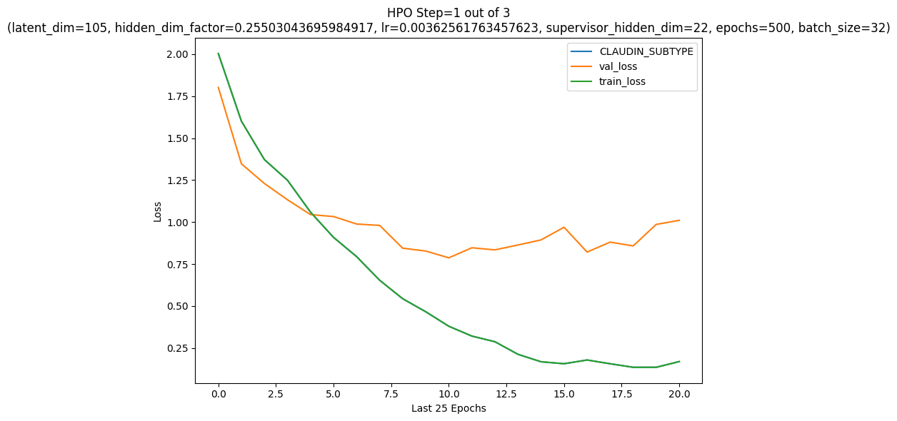
LOCAL_RANK: 0 - CUDA_VISIBLE_DEVICES: [0,1,2]
┏━━━━━━━━━━━━━━━━━━━━━━━━━━━┳━━━━━━━━━━━━━━━━━━━━━━━━━━━┓ ┃ Validate metric ┃ DataLoader 0 ┃ ┡━━━━━━━━━━━━━━━━━━━━━━━━━━━╇━━━━━━━━━━━━━━━━━━━━━━━━━━━┩ │ CLAUDIN_SUBTYPE │ 1.0104180574417114 │ │ val_loss │ 1.0104180574417114 │ └───────────────────────────┴───────────────────────────┘
Tuning Progress: 33%|███▎ | 1/3 [00:09<00:18, 9.02s/it, Iteration=1, Best Loss=1.01]GPU available: True (cuda), used: True
TPU available: False, using: 0 TPU cores
💡 Tip: For seamless cloud logging and experiment tracking, try installing [litlogger](https://pypi.org/project/litlogger/) to enable LitLogger, which logs metrics and artifacts automatically to the Lightning Experiments platform.
LOCAL_RANK: 0 - CUDA_VISIBLE_DEVICES: [0,1,2]
[INFO] current best val loss: 1.0104180574417114; best params: {'latent_dim': 105, 'hidden_dim_factor': 0.25503043695984917, 'lr': 0.00362561763457623, 'supervisor_hidden_dim': 22, 'epochs': 500, 'batch_size': 32} since 0 hpo iterations
[INFO] training validation split 1
[INFO] hpo config:{'latent_dim': 67, 'hidden_dim_factor': 0.3001125833417066, 'lr': 0.0001930783753654713, 'supervisor_hidden_dim': 24, 'epochs': 500, 'batch_size': 128}
┏━━━┳━━━━━━━━━━━━━━┳━━━━━━━━━━━━━━━┳━━━━━━━━┳━━━━━━━┳━━━━━━━┓ ┃ ┃ Name ┃ Type ┃ Params ┃ Mode ┃ FLOPs ┃ ┡━━━╇━━━━━━━━━━━━━━╇━━━━━━━━━━━━━━━╇━━━━━━━━╇━━━━━━━╇━━━━━━━┩ │ 0 │ log_vars │ ParameterDict │ 1 │ train │ 0 │ │ 1 │ encoders │ ModuleList │ 119 K │ train │ 0 │ │ 2 │ fusion_block │ Linear │ 9.0 K │ train │ 0 │ │ 3 │ MLPs │ ModuleDict │ 1.9 K │ train │ 0 │ └───┴──────────────┴───────────────┴────────┴───────┴───────┘
Trainable params: 130 K Non-trainable params: 0 Total params: 130 K Total estimated model params size (MB): 0 Modules in train mode: 22 Modules in eval mode: 0 Total FLOPs: 0
/home/cykim/miniforge3/envs/flexy/lib/python3.12/site-packages/lightning/pytorch/utilities/data.py:79: UserWarning: Trying to infer the `batch_size` from an ambiguous collection. The batch size we found is 39. To avoid any miscalculations, use `self.log(..., batch_size=batch_size)`.
/home/cykim/miniforge3/envs/flexy/lib/python3.12/site-packages/lightning/pytorch/utilities/data.py:79: UserWarning: Trying to infer the `batch_size` from an ambiguous collection. The batch size we found is 128. To avoid any miscalculations, use `self.log(..., batch_size=batch_size)`.
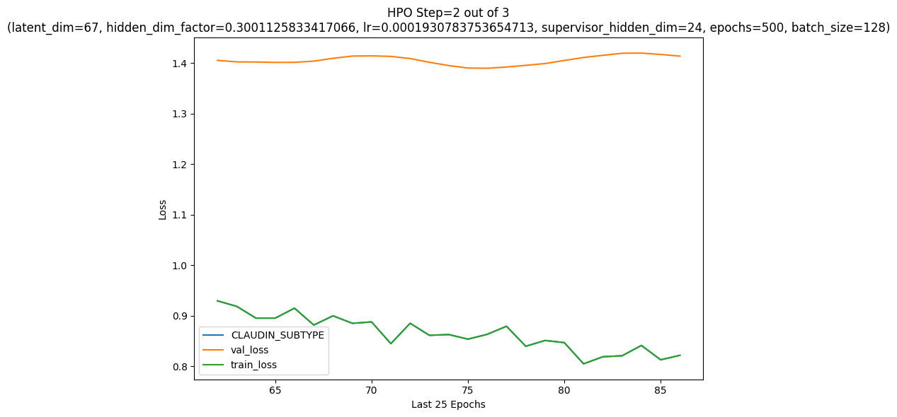
LOCAL_RANK: 0 - CUDA_VISIBLE_DEVICES: [0,1,2]
┏━━━━━━━━━━━━━━━━━━━━━━━━━━━┳━━━━━━━━━━━━━━━━━━━━━━━━━━━┓ ┃ Validate metric ┃ DataLoader 0 ┃ ┡━━━━━━━━━━━━━━━━━━━━━━━━━━━╇━━━━━━━━━━━━━━━━━━━━━━━━━━━┩ │ CLAUDIN_SUBTYPE │ 1.4136062860488892 │ │ val_loss │ 1.4136062860488892 │ └───────────────────────────┴───────────────────────────┘
Tuning Progress: 67%|██████▋ | 2/3 [00:34<00:18, 18.69s/it, Iteration=2, Best Loss=1.01]GPU available: True (cuda), used: True
TPU available: False, using: 0 TPU cores
💡 Tip: For seamless cloud logging and experiment tracking, try installing [litlogger](https://pypi.org/project/litlogger/) to enable LitLogger, which logs metrics and artifacts automatically to the Lightning Experiments platform.
LOCAL_RANK: 0 - CUDA_VISIBLE_DEVICES: [0,1,2]
[INFO] current best val loss: 1.0104180574417114; best params: {'latent_dim': 105, 'hidden_dim_factor': 0.25503043695984917, 'lr': 0.00362561763457623, 'supervisor_hidden_dim': 22, 'epochs': 500, 'batch_size': 32} since 1 hpo iterations
[INFO] training validation split 1
[INFO] hpo config:{'latent_dim': 121, 'hidden_dim_factor': 0.2002336297523043, 'lr': 0.009647685075720105, 'supervisor_hidden_dim': 23, 'epochs': 500, 'batch_size': 32}
┏━━━┳━━━━━━━━━━━━━━┳━━━━━━━━━━━━━━━┳━━━━━━━━┳━━━━━━━┳━━━━━━━┓ ┃ ┃ Name ┃ Type ┃ Params ┃ Mode ┃ FLOPs ┃ ┡━━━╇━━━━━━━━━━━━━━╇━━━━━━━━━━━━━━━╇━━━━━━━━╇━━━━━━━╇━━━━━━━┩ │ 0 │ log_vars │ ParameterDict │ 1 │ train │ 0 │ │ 1 │ encoders │ ModuleList │ 88.6 K │ train │ 0 │ │ 2 │ fusion_block │ Linear │ 29.4 K │ train │ 0 │ │ 3 │ MLPs │ ModuleDict │ 3.0 K │ train │ 0 │ └───┴──────────────┴───────────────┴────────┴───────┴───────┘
Trainable params: 121 K Non-trainable params: 0 Total params: 121 K Total estimated model params size (MB): 0 Modules in train mode: 22 Modules in eval mode: 0 Total FLOPs: 0
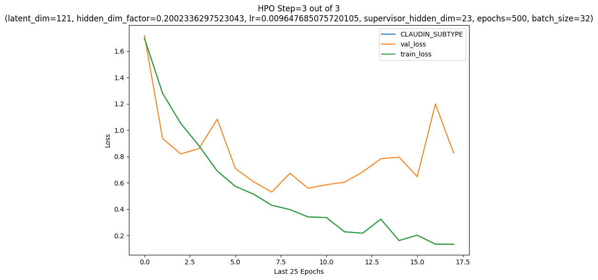
LOCAL_RANK: 0 - CUDA_VISIBLE_DEVICES: [0,1,2]
┏━━━━━━━━━━━━━━━━━━━━━━━━━━━┳━━━━━━━━━━━━━━━━━━━━━━━━━━━┓ ┃ Validate metric ┃ DataLoader 0 ┃ ┡━━━━━━━━━━━━━━━━━━━━━━━━━━━╇━━━━━━━━━━━━━━━━━━━━━━━━━━━┩ │ CLAUDIN_SUBTYPE │ 0.8270796537399292 │ │ val_loss │ 0.8270796537399292 │ └───────────────────────────┴───────────────────────────┘
Tuning Progress: 100%|██████████| 3/3 [00:42<00:00, 14.21s/it, Iteration=3, Best Loss=0.827]
[INFO] current best val loss: 0.8270796537399292; best params: {'latent_dim': 121, 'hidden_dim_factor': 0.2002336297523043, 'lr': 0.009647685075720105, 'supervisor_hidden_dim': 23, 'epochs': 500, 'batch_size': 32} since 0 hpo iterations
소요 시간: 0.7분
저장: ./models/DirectPred_clf.pth
metrics_dp = flexynesis.utils.evaluate_wrapper(
method='DirectPred',
y_pred_dict=model_dp.predict(test_dataset),
dataset=test_dataset,
)
all_metrics.append(metrics_dp)
metrics_dp
| method | var | variable_type | metric | value | |
|---|---|---|---|---|---|
| 0 | DirectPred | CLAUDIN_SUBTYPE | categorical | balanced_acc | 0.612479 |
| 1 | DirectPred | CLAUDIN_SUBTYPE | categorical | f1_score | 0.711945 |
| 2 | DirectPred | CLAUDIN_SUBTYPE | categorical | kappa | 0.637224 |
| 3 | DirectPred | CLAUDIN_SUBTYPE | categorical | average_auroc | 0.931027 |
| 4 | DirectPred | CLAUDIN_SUBTYPE | categorical | average_aupr | 0.790874 |
E_dp = model_dp.transform(test_dataset)
labels = [test_dataset.label_mappings['CLAUDIN_SUBTYPE'][x]
for x in test_dataset.ann['CLAUDIN_SUBTYPE'].numpy()]
flexynesis.utils.plot_dim_reduced(E_dp, labels, method='umap', color_type='categorical')
{kind=link}
Section 2. DirectPred — 생존분석#
tuner = flexynesis.main.HyperparameterTuning(
dataset=train_dataset,
model_class=flexynesis.models.DirectPred,
target_variables=[],
config_name='DirectPred',
n_iter=HPO_ITER,
val_size=0.2, use_cv=False, cv_splits=5,
use_loss_weighting=True, early_stop_patience=10, plot_losses=True,
surv_event_var='OS_STATUS', surv_time_var='OS_MONTHS',
batch_variables=None, device_type=None,
)
_t0 = time.time()
model_surv, params_surv = tuner.perform_tuning()
_elapsed = time.time() - _t0
training_log.append({'model': 'DirectPred (surv)', 'time_sec': _elapsed, 'hpo_iter': HPO_ITER})
print(f"소요 시간: {_elapsed/60:.1f}분")
torch.save(model_surv, './models/DirectPred_surv.pth')
print("저장: ./models/DirectPred_surv.pth")
Tuning Progress: 0%| | 0/3 [00:00<?, ?it/s]/home/cykim/miniforge3/envs/flexy/lib/python3.12/site-packages/lightning/fabric/plugins/environments/slurm.py:204: PossibleUserWarning: The `srun` command is available on your system but is not used. HINT: If your intention is to run Lightning on SLURM, prepend your python command with `srun` like so: srun python /home/cykim/miniforge3/envs/flexy/lib/python3.12/sit ...
GPU available: True (cuda), used: True
TPU available: False, using: 0 TPU cores
💡 Tip: For seamless cloud logging and experiment tracking, try installing [litlogger](https://pypi.org/project/litlogger/) to enable LitLogger, which logs metrics and artifacts automatically to the Lightning Experiments platform.
LOCAL_RANK: 0 - CUDA_VISIBLE_DEVICES: [0,1,2]
[INFO] training validation split 1
[INFO] hpo config:{'latent_dim': 100, 'hidden_dim_factor': 0.31789683469365776, 'lr': 0.0045533228152233925, 'supervisor_hidden_dim': 22, 'epochs': 500, 'batch_size': 32}
┏━━━┳━━━━━━━━━━━━━━┳━━━━━━━━━━━━━━━┳━━━━━━━━┳━━━━━━━┳━━━━━━━┓ ┃ ┃ Name ┃ Type ┃ Params ┃ Mode ┃ FLOPs ┃ ┡━━━╇━━━━━━━━━━━━━━╇━━━━━━━━━━━━━━━╇━━━━━━━━╇━━━━━━━╇━━━━━━━┩ │ 0 │ log_vars │ ParameterDict │ 1 │ train │ 0 │ │ 1 │ encoders │ ModuleList │ 134 K │ train │ 0 │ │ 2 │ fusion_block │ Linear │ 20.1 K │ train │ 0 │ │ 3 │ MLPs │ ModuleDict │ 2.3 K │ train │ 0 │ └───┴──────────────┴───────────────┴────────┴───────┴───────┘
Trainable params: 157 K Non-trainable params: 0 Total params: 157 K Total estimated model params size (MB): 0 Modules in train mode: 22 Modules in eval mode: 0 Total FLOPs: 0
/home/cykim/miniforge3/envs/flexy/lib/python3.12/site-packages/lightning/pytorch/utilities/_pytree.py:21: FutureWarning: `isinstance(treespec, LeafSpec)` is deprecated, use `isinstance(treespec, TreeSpec) and treespec.is_leaf()` instead.
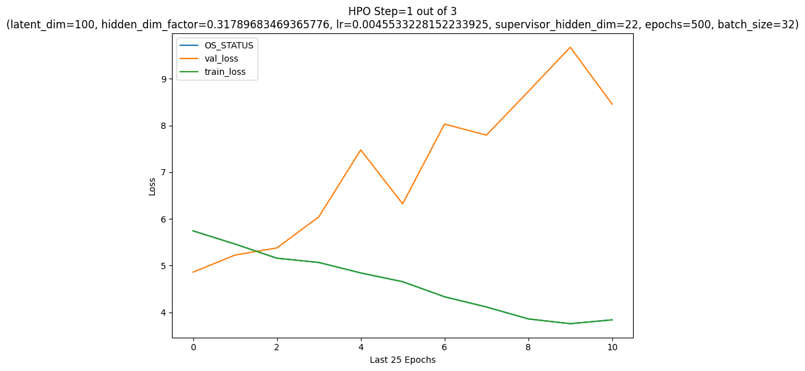
LOCAL_RANK: 0 - CUDA_VISIBLE_DEVICES: [0,1,2]
┏━━━━━━━━━━━━━━━━━━━━━━━━━━━┳━━━━━━━━━━━━━━━━━━━━━━━━━━━┓ ┃ Validate metric ┃ DataLoader 0 ┃ ┡━━━━━━━━━━━━━━━━━━━━━━━━━━━╇━━━━━━━━━━━━━━━━━━━━━━━━━━━┩ │ OS_STATUS │ 8.458761215209961 │ │ val_loss │ 8.458761215209961 │ └───────────────────────────┴───────────────────────────┘
Tuning Progress: 33%|███▎ | 1/3 [00:04<00:09, 4.70s/it, Iteration=1, Best Loss=8.46]GPU available: True (cuda), used: True
TPU available: False, using: 0 TPU cores
💡 Tip: For seamless cloud logging and experiment tracking, try installing [litlogger](https://pypi.org/project/litlogger/) to enable LitLogger, which logs metrics and artifacts automatically to the Lightning Experiments platform.
LOCAL_RANK: 0 - CUDA_VISIBLE_DEVICES: [0,1,2]
[INFO] current best val loss: 8.458761215209961; best params: {'latent_dim': 100, 'hidden_dim_factor': 0.31789683469365776, 'lr': 0.0045533228152233925, 'supervisor_hidden_dim': 22, 'epochs': 500, 'batch_size': 32} since 0 hpo iterations
[INFO] training validation split 1
[INFO] hpo config:{'latent_dim': 18, 'hidden_dim_factor': 0.2226077181057387, 'lr': 0.002417846882276413, 'supervisor_hidden_dim': 21, 'epochs': 500, 'batch_size': 64}
┏━━━┳━━━━━━━━━━━━━━┳━━━━━━━━━━━━━━━┳━━━━━━━━┳━━━━━━━┳━━━━━━━┓ ┃ ┃ Name ┃ Type ┃ Params ┃ Mode ┃ FLOPs ┃ ┡━━━╇━━━━━━━━━━━━━━╇━━━━━━━━━━━━━━━╇━━━━━━━━╇━━━━━━━╇━━━━━━━┩ │ 0 │ log_vars │ ParameterDict │ 1 │ train │ 0 │ │ 1 │ encoders │ ModuleList │ 79.4 K │ train │ 0 │ │ 2 │ fusion_block │ Linear │ 666 │ train │ 0 │ │ 3 │ MLPs │ ModuleDict │ 485 │ train │ 0 │ └───┴──────────────┴───────────────┴────────┴───────┴───────┘
Trainable params: 80.5 K Non-trainable params: 0 Total params: 80.5 K Total estimated model params size (MB): 0 Modules in train mode: 22 Modules in eval mode: 0 Total FLOPs: 0
/home/cykim/miniforge3/envs/flexy/lib/python3.12/site-packages/lightning/pytorch/utilities/data.py:79: UserWarning: Trying to infer the `batch_size` from an ambiguous collection. The batch size we found is 64. To avoid any miscalculations, use `self.log(..., batch_size=batch_size)`.
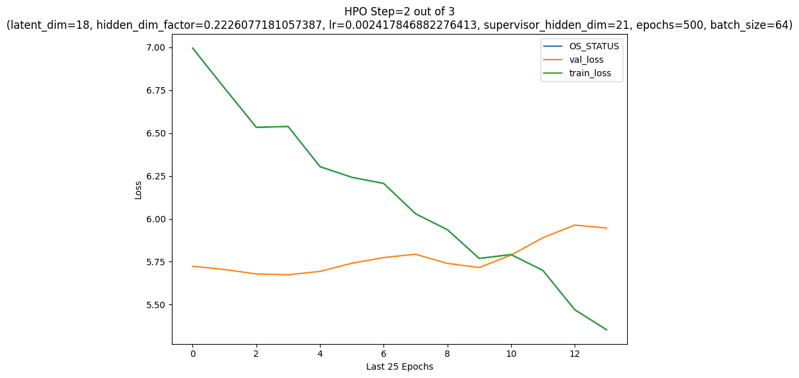
LOCAL_RANK: 0 - CUDA_VISIBLE_DEVICES: [0,1,2]
┏━━━━━━━━━━━━━━━━━━━━━━━━━━━┳━━━━━━━━━━━━━━━━━━━━━━━━━━━┓ ┃ Validate metric ┃ DataLoader 0 ┃ ┡━━━━━━━━━━━━━━━━━━━━━━━━━━━╇━━━━━━━━━━━━━━━━━━━━━━━━━━━┩ │ OS_STATUS │ 5.946399211883545 │ │ val_loss │ 5.946399211883545 │ └───────────────────────────┴───────────────────────────┘
Tuning Progress: 67%|██████▋ | 2/3 [00:08<00:04, 4.42s/it, Iteration=2, Best Loss=5.95]GPU available: True (cuda), used: True
TPU available: False, using: 0 TPU cores
💡 Tip: For seamless cloud logging and experiment tracking, try installing [litlogger](https://pypi.org/project/litlogger/) to enable LitLogger, which logs metrics and artifacts automatically to the Lightning Experiments platform.
LOCAL_RANK: 0 - CUDA_VISIBLE_DEVICES: [0,1,2]
[INFO] current best val loss: 5.946399211883545; best params: {'latent_dim': 18, 'hidden_dim_factor': 0.2226077181057387, 'lr': 0.002417846882276413, 'supervisor_hidden_dim': 21, 'epochs': 500, 'batch_size': 64} since 0 hpo iterations
[INFO] training validation split 1
[INFO] hpo config:{'latent_dim': 97, 'hidden_dim_factor': 0.42712436061273684, 'lr': 0.0005697719939974019, 'supervisor_hidden_dim': 14, 'epochs': 500, 'batch_size': 32}
┏━━━┳━━━━━━━━━━━━━━┳━━━━━━━━━━━━━━━┳━━━━━━━━┳━━━━━━━┳━━━━━━━┓ ┃ ┃ Name ┃ Type ┃ Params ┃ Mode ┃ FLOPs ┃ ┡━━━╇━━━━━━━━━━━━━━╇━━━━━━━━━━━━━━━╇━━━━━━━━╇━━━━━━━╇━━━━━━━┩ │ 0 │ log_vars │ ParameterDict │ 1 │ train │ 0 │ │ 1 │ encoders │ ModuleList │ 180 K │ train │ 0 │ │ 2 │ fusion_block │ Linear │ 18.9 K │ train │ 0 │ │ 3 │ MLPs │ ModuleDict │ 1.4 K │ train │ 0 │ └───┴──────────────┴───────────────┴────────┴───────┴───────┘
Trainable params: 200 K Non-trainable params: 0 Total params: 200 K Total estimated model params size (MB): 0 Modules in train mode: 22 Modules in eval mode: 0 Total FLOPs: 0
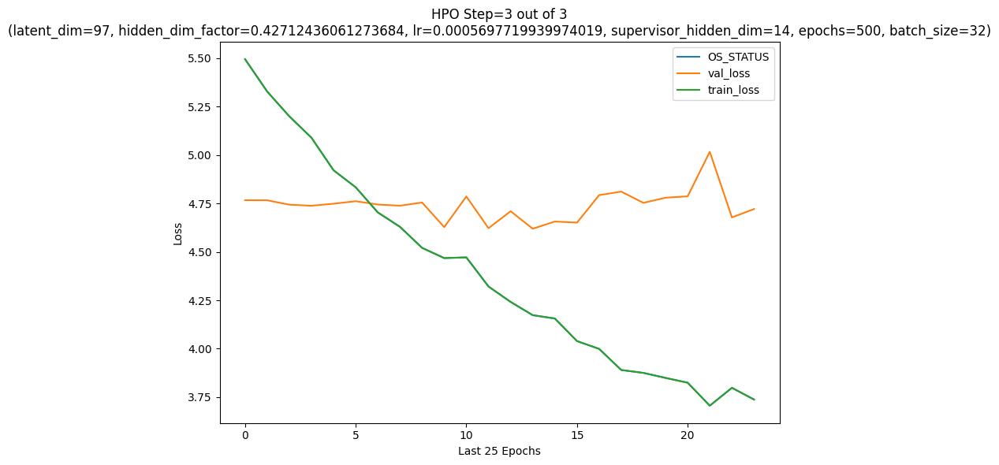
LOCAL_RANK: 0 - CUDA_VISIBLE_DEVICES: [0,1,2]
┏━━━━━━━━━━━━━━━━━━━━━━━━━━━┳━━━━━━━━━━━━━━━━━━━━━━━━━━━┓ ┃ Validate metric ┃ DataLoader 0 ┃ ┡━━━━━━━━━━━━━━━━━━━━━━━━━━━╇━━━━━━━━━━━━━━━━━━━━━━━━━━━┩ │ OS_STATUS │ 4.721218585968018 │ │ val_loss │ 4.721218585968018 │ └───────────────────────────┴───────────────────────────┘
Tuning Progress: 100%|██████████| 3/3 [00:19<00:00, 6.49s/it, Iteration=3, Best Loss=4.72]
[INFO] current best val loss: 4.721218585968018; best params: {'latent_dim': 97, 'hidden_dim_factor': 0.42712436061273684, 'lr': 0.0005697719939974019, 'supervisor_hidden_dim': 14, 'epochs': 500, 'batch_size': 32} since 0 hpo iterations
소요 시간: 0.3분
저장: ./models/DirectPred_surv.pth
metrics_surv = flexynesis.utils.evaluate_wrapper(
method='DirectPred_survival',
y_pred_dict=model_surv.predict(test_dataset),
dataset=test_dataset,
surv_event_var=model_surv.surv_event_var,
surv_time_var=model_surv.surv_time_var,
)
all_metrics.append(metrics_surv)
metrics_surv
| method | var | variable_type | metric | value | |
|---|---|---|---|---|---|
| 0 | DirectPred_survival | OS_STATUS | categorical | balanced_acc | 0.468750 |
| 1 | DirectPred_survival | OS_STATUS | categorical | f1_score | 0.432000 |
| 2 | DirectPred_survival | OS_STATUS | categorical | kappa | -0.073620 |
| 3 | DirectPred_survival | OS_STATUS | categorical | average_auroc | 0.389974 |
| 4 | DirectPred_survival | OS_STATUS | categorical | average_aupr | 0.553138 |
outputs = model_surv.predict(test_dataset)['OS_STATUS']
if outputs.ndim > 1:
outputs = outputs[:, 0]
risk_scores = np.exp(outputs.flatten())
groups = np.digitize(risk_scores, np.quantile(risk_scores, [0.5]))
durations = test_dataset.ann['OS_MONTHS'].float()
events = test_dataset.ann['OS_STATUS'].float()
valid_t = ~torch.isnan(durations) & ~torch.isnan(events)
valid_np = valid_t.numpy()
flexynesis.utils.plot_kaplan_meier_curves(
durations[valid_t], events[valid_t], groups[valid_np]
)
{kind=link}
Section 3. supervised_vae — 분류#
tuner = flexynesis.main.HyperparameterTuning(
dataset=train_dataset,
model_class=flexynesis.models.supervised_vae,
target_variables=['CLAUDIN_SUBTYPE'],
config_name='supervised_vae',
n_iter=HPO_ITER,
val_size=0.2, use_cv=False, cv_splits=5,
use_loss_weighting=True, early_stop_patience=10, plot_losses=True,
surv_event_var=None, surv_time_var=None,
batch_variables=None, device_type=None,
)
_t0 = time.time()
model_vae, params_vae = tuner.perform_tuning()
_elapsed = time.time() - _t0
training_log.append({'model': 'supervised_vae (clf)', 'time_sec': _elapsed, 'hpo_iter': HPO_ITER})
print(f"소요 시간: {_elapsed/60:.1f}분")
torch.save(model_vae, './models/supervised_vae_clf.pth')
print("저장: ./models/supervised_vae_clf.pth")
Tuning Progress: 0%| | 0/3 [00:00<?, ?it/s]/home/cykim/miniforge3/envs/flexy/lib/python3.12/site-packages/lightning/fabric/plugins/environments/slurm.py:204: PossibleUserWarning: The `srun` command is available on your system but is not used. HINT: If your intention is to run Lightning on SLURM, prepend your python command with `srun` like so: srun python /home/cykim/miniforge3/envs/flexy/lib/python3.12/sit ...
GPU available: True (cuda), used: True
TPU available: False, using: 0 TPU cores
💡 Tip: For seamless cloud logging and experiment tracking, try installing [litlogger](https://pypi.org/project/litlogger/) to enable LitLogger, which logs metrics and artifacts automatically to the Lightning Experiments platform.
LOCAL_RANK: 0 - CUDA_VISIBLE_DEVICES: [0,1,2]
[INFO] training validation split 1
[INFO] hpo config:{'latent_dim': 42, 'hidden_dim_factor': 0.4015102053217571, 'supervisor_hidden_dim': 23, 'lr': 0.0005203857985647049, 'epochs': 500, 'batch_size': 128}
┏━━━┳━━━━━━━━━━━━┳━━━━━━━━━━━━━━━┳━━━━━━━━┳━━━━━━━┳━━━━━━━┓ ┃ ┃ Name ┃ Type ┃ Params ┃ Mode ┃ FLOPs ┃ ┡━━━╇━━━━━━━━━━━━╇━━━━━━━━━━━━━━━╇━━━━━━━━╇━━━━━━━╇━━━━━━━┩ │ 0 │ log_vars │ ParameterDict │ 2 │ train │ 0 │ │ 1 │ encoders │ ModuleList │ 165 K │ train │ 0 │ │ 2 │ FC_mean │ Linear │ 3.6 K │ train │ 0 │ │ 3 │ FC_log_var │ Linear │ 3.6 K │ train │ 0 │ │ 4 │ decoders │ ModuleList │ 152 K │ train │ 0 │ │ 5 │ MLPs │ ModuleDict │ 1.2 K │ train │ 0 │ └───┴────────────┴───────────────┴────────┴───────┴───────┘
Trainable params: 325 K Non-trainable params: 0 Total params: 325 K Total estimated model params size (MB): 1 Modules in train mode: 38 Modules in eval mode: 0 Total FLOPs: 0
/home/cykim/miniforge3/envs/flexy/lib/python3.12/site-packages/lightning/pytorch/utilities/_pytree.py:21: FutureWarning: `isinstance(treespec, LeafSpec)` is deprecated, use `isinstance(treespec, TreeSpec) and treespec.is_leaf()` instead.
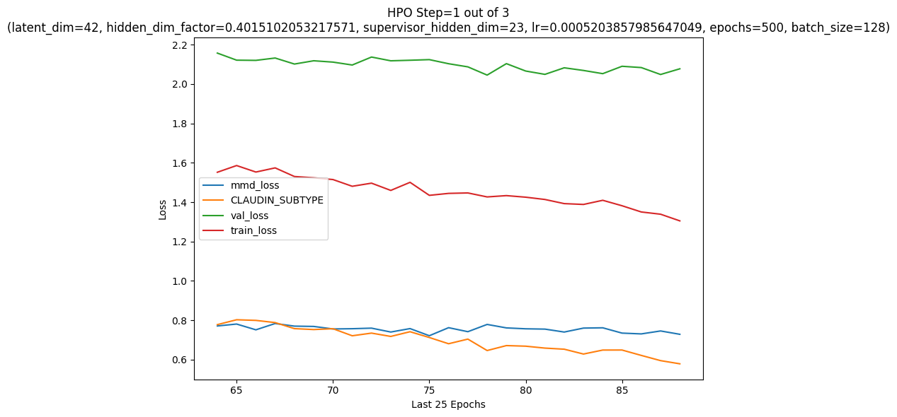
LOCAL_RANK: 0 - CUDA_VISIBLE_DEVICES: [0,1,2]
┏━━━━━━━━━━━━━━━━━━━━━━━━━━━┳━━━━━━━━━━━━━━━━━━━━━━━━━━━┓ ┃ Validate metric ┃ DataLoader 0 ┃ ┡━━━━━━━━━━━━━━━━━━━━━━━━━━━╇━━━━━━━━━━━━━━━━━━━━━━━━━━━┩ │ CLAUDIN_SUBTYPE │ 1.2306619882583618 │ │ mmd_loss │ 0.798128604888916 │ │ val_loss │ 2.0287904739379883 │ └───────────────────────────┴───────────────────────────┘
Tuning Progress: 33%|███▎ | 1/3 [00:19<00:38, 19.07s/it, Iteration=1, Best Loss=2.03]GPU available: True (cuda), used: True
TPU available: False, using: 0 TPU cores
💡 Tip: For seamless cloud logging and experiment tracking, try installing [litlogger](https://pypi.org/project/litlogger/) to enable LitLogger, which logs metrics and artifacts automatically to the Lightning Experiments platform.
LOCAL_RANK: 0 - CUDA_VISIBLE_DEVICES: [0,1,2]
[INFO] current best val loss: 2.0287904739379883; best params: {'latent_dim': 42, 'hidden_dim_factor': 0.4015102053217571, 'supervisor_hidden_dim': 23, 'lr': 0.0005203857985647049, 'epochs': 500, 'batch_size': 128} since 0 hpo iterations
[INFO] training validation split 1
[INFO] hpo config:{'latent_dim': 74, 'hidden_dim_factor': 0.43169551752069185, 'supervisor_hidden_dim': 20, 'lr': 0.005062476271565483, 'epochs': 500, 'batch_size': 64}
┏━━━┳━━━━━━━━━━━━┳━━━━━━━━━━━━━━━┳━━━━━━━━┳━━━━━━━┳━━━━━━━┓ ┃ ┃ Name ┃ Type ┃ Params ┃ Mode ┃ FLOPs ┃ ┡━━━╇━━━━━━━━━━━━╇━━━━━━━━━━━━━━━╇━━━━━━━━╇━━━━━━━╇━━━━━━━┩ │ 0 │ log_vars │ ParameterDict │ 2 │ train │ 0 │ │ 1 │ encoders │ ModuleList │ 200 K │ train │ 0 │ │ 2 │ FC_mean │ Linear │ 11.0 K │ train │ 0 │ │ 3 │ FC_log_var │ Linear │ 11.0 K │ train │ 0 │ │ 4 │ decoders │ ModuleList │ 174 K │ train │ 0 │ │ 5 │ MLPs │ ModuleDict │ 1.7 K │ train │ 0 │ └───┴────────────┴───────────────┴────────┴───────┴───────┘
Trainable params: 399 K Non-trainable params: 0 Total params: 399 K Total estimated model params size (MB): 1 Modules in train mode: 38 Modules in eval mode: 0 Total FLOPs: 0
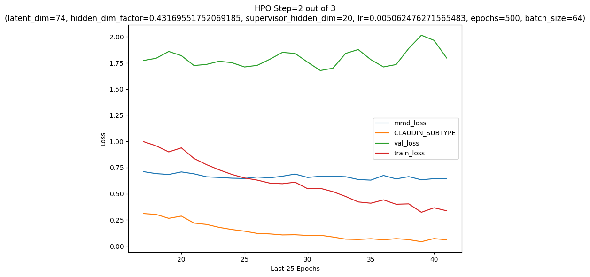
LOCAL_RANK: 0 - CUDA_VISIBLE_DEVICES: [0,1,2]
┏━━━━━━━━━━━━━━━━━━━━━━━━━━━┳━━━━━━━━━━━━━━━━━━━━━━━━━━━┓ ┃ Validate metric ┃ DataLoader 0 ┃ ┡━━━━━━━━━━━━━━━━━━━━━━━━━━━╇━━━━━━━━━━━━━━━━━━━━━━━━━━━┩ │ CLAUDIN_SUBTYPE │ 1.165968894958496 │ │ mmd_loss │ 0.6262515783309937 │ │ val_loss │ 1.7922204732894897 │ └───────────────────────────┴───────────────────────────┘
Tuning Progress: 67%|██████▋ | 2/3 [00:34<00:16, 16.79s/it, Iteration=2, Best Loss=1.79]GPU available: True (cuda), used: True
TPU available: False, using: 0 TPU cores
💡 Tip: For seamless cloud logging and experiment tracking, try installing [litlogger](https://pypi.org/project/litlogger/) to enable LitLogger, which logs metrics and artifacts automatically to the Lightning Experiments platform.
LOCAL_RANK: 0 - CUDA_VISIBLE_DEVICES: [0,1,2]
[INFO] current best val loss: 1.7922204732894897; best params: {'latent_dim': 74, 'hidden_dim_factor': 0.43169551752069185, 'supervisor_hidden_dim': 20, 'lr': 0.005062476271565483, 'epochs': 500, 'batch_size': 64} since 0 hpo iterations
[INFO] training validation split 1
[INFO] hpo config:{'latent_dim': 114, 'hidden_dim_factor': 0.32104485986371917, 'supervisor_hidden_dim': 11, 'lr': 0.00011417350999721898, 'epochs': 500, 'batch_size': 64}
┏━━━┳━━━━━━━━━━━━┳━━━━━━━━━━━━━━━┳━━━━━━━━┳━━━━━━━┳━━━━━━━┓ ┃ ┃ Name ┃ Type ┃ Params ┃ Mode ┃ FLOPs ┃ ┡━━━╇━━━━━━━━━━━━╇━━━━━━━━━━━━━━━╇━━━━━━━━╇━━━━━━━╇━━━━━━━┩ │ 0 │ log_vars │ ParameterDict │ 2 │ train │ 0 │ │ 1 │ encoders │ ModuleList │ 170 K │ train │ 0 │ │ 2 │ FC_mean │ Linear │ 26.1 K │ train │ 0 │ │ 3 │ FC_log_var │ Linear │ 26.1 K │ train │ 0 │ │ 4 │ decoders │ ModuleList │ 140 K │ train │ 0 │ │ 5 │ MLPs │ ModuleDict │ 1.4 K │ train │ 0 │ └───┴────────────┴───────────────┴────────┴───────┴───────┘
Trainable params: 364 K Non-trainable params: 0 Total params: 364 K Total estimated model params size (MB): 1 Modules in train mode: 38 Modules in eval mode: 0 Total FLOPs: 0
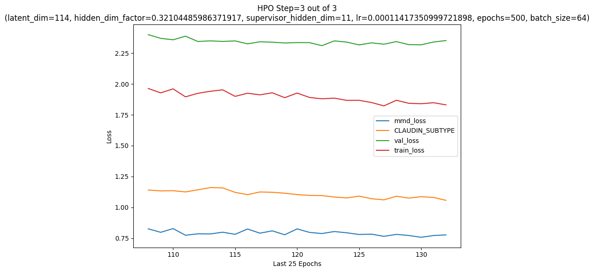
LOCAL_RANK: 0 - CUDA_VISIBLE_DEVICES: [0,1,2]
┏━━━━━━━━━━━━━━━━━━━━━━━━━━━┳━━━━━━━━━━━━━━━━━━━━━━━━━━━┓ ┃ Validate metric ┃ DataLoader 0 ┃ ┡━━━━━━━━━━━━━━━━━━━━━━━━━━━╇━━━━━━━━━━━━━━━━━━━━━━━━━━━┩ │ CLAUDIN_SUBTYPE │ 1.4166409969329834 │ │ mmd_loss │ 0.878006637096405 │ │ val_loss │ 2.294647693634033 │ └───────────────────────────┴───────────────────────────┘
Tuning Progress: 100%|██████████| 3/3 [01:20<00:00, 26.88s/it, Iteration=3, Best Loss=1.79]
[INFO] current best val loss: 1.7922204732894897; best params: {'latent_dim': 74, 'hidden_dim_factor': 0.43169551752069185, 'supervisor_hidden_dim': 20, 'lr': 0.005062476271565483, 'epochs': 500, 'batch_size': 64} since 1 hpo iterations
소요 시간: 1.3분
저장: ./models/supervised_vae_clf.pth
metrics_vae = flexynesis.utils.evaluate_wrapper(
method='supervised_vae',
y_pred_dict=model_vae.predict(test_dataset),
dataset=test_dataset,
)
all_metrics.append(metrics_vae)
metrics_vae
| method | var | variable_type | metric | value | |
|---|---|---|---|---|---|
| 0 | supervised_vae | CLAUDIN_SUBTYPE | categorical | balanced_acc | 0.596401 |
| 1 | supervised_vae | CLAUDIN_SUBTYPE | categorical | f1_score | 0.716399 |
| 2 | supervised_vae | CLAUDIN_SUBTYPE | categorical | kappa | 0.642058 |
| 3 | supervised_vae | CLAUDIN_SUBTYPE | categorical | average_auroc | 0.910939 |
| 4 | supervised_vae | CLAUDIN_SUBTYPE | categorical | average_aupr | 0.763634 |
E_vae = model_vae.transform(test_dataset)
flexynesis.utils.plot_dim_reduced(E_vae, labels, method='umap', color_type='categorical')
{kind=link}
Section 4. supervised_vae — 비지도#
tuner = flexynesis.main.HyperparameterTuning(
dataset=train_dataset,
model_class=flexynesis.models.supervised_vae,
target_variables=[], # 비지도: supervisor head 없음
config_name='supervised_vae',
n_iter=HPO_ITER,
val_size=0.2, use_cv=False, cv_splits=5,
use_loss_weighting=True, early_stop_patience=10, plot_losses=True,
surv_event_var=None, surv_time_var=None,
batch_variables=None, device_type=None,
)
_t0 = time.time()
model_unsup, params_unsup = tuner.perform_tuning()
_elapsed = time.time() - _t0
training_log.append({'model': 'supervised_vae (unsup)', 'time_sec': _elapsed, 'hpo_iter': HPO_ITER})
print(f"소요 시간: {_elapsed/60:.1f}분")
torch.save(model_unsup, './models/supervised_vae_unsup.pth')
print("저장: ./models/supervised_vae_unsup.pth")
Tuning Progress: 0%| | 0/3 [00:00<?, ?it/s]/home/cykim/miniforge3/envs/flexy/lib/python3.12/site-packages/lightning/fabric/plugins/environments/slurm.py:204: PossibleUserWarning: The `srun` command is available on your system but is not used. HINT: If your intention is to run Lightning on SLURM, prepend your python command with `srun` like so: srun python /home/cykim/miniforge3/envs/flexy/lib/python3.12/sit ...
GPU available: True (cuda), used: True
TPU available: False, using: 0 TPU cores
💡 Tip: For seamless cloud logging and experiment tracking, try installing [litlogger](https://pypi.org/project/litlogger/) to enable LitLogger, which logs metrics and artifacts automatically to the Lightning Experiments platform.
LOCAL_RANK: 0 - CUDA_VISIBLE_DEVICES: [0,1,2]
[INFO] training validation split 1
[INFO] hpo config:{'latent_dim': 43, 'hidden_dim_factor': 0.2331422339394184, 'supervisor_hidden_dim': 17, 'lr': 0.00037538592368527556, 'epochs': 500, 'batch_size': 32}
┏━━━┳━━━━━━━━━━━━┳━━━━━━━━━━━━━━━┳━━━━━━━━┳━━━━━━━┳━━━━━━━┓ ┃ ┃ Name ┃ Type ┃ Params ┃ Mode ┃ FLOPs ┃ ┡━━━╇━━━━━━━━━━━━╇━━━━━━━━━━━━━━━╇━━━━━━━━╇━━━━━━━╇━━━━━━━┩ │ 0 │ log_vars │ ParameterDict │ 1 │ train │ 0 │ │ 1 │ encoders │ ModuleList │ 96.4 K │ train │ 0 │ │ 2 │ FC_mean │ Linear │ 3.7 K │ train │ 0 │ │ 3 │ FC_log_var │ Linear │ 3.7 K │ train │ 0 │ │ 4 │ decoders │ ModuleList │ 88.9 K │ train │ 0 │ │ 5 │ MLPs │ ModuleDict │ 0 │ train │ 0 │ └───┴────────────┴───────────────┴────────┴───────┴───────┘
Trainable params: 192 K Non-trainable params: 0 Total params: 192 K Total estimated model params size (MB): 0 Modules in train mode: 32 Modules in eval mode: 0 Total FLOPs: 0
/home/cykim/miniforge3/envs/flexy/lib/python3.12/site-packages/lightning/pytorch/utilities/_pytree.py:21: FutureWarning: `isinstance(treespec, LeafSpec)` is deprecated, use `isinstance(treespec, TreeSpec) and treespec.is_leaf()` instead.
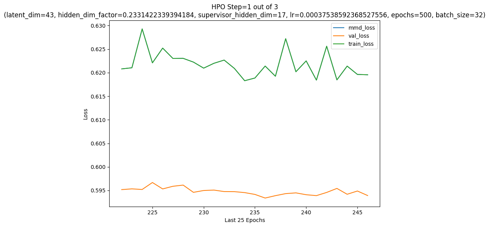
LOCAL_RANK: 0 - CUDA_VISIBLE_DEVICES: [0,1,2]
┏━━━━━━━━━━━━━━━━━━━━━━━━━━━┳━━━━━━━━━━━━━━━━━━━━━━━━━━━┓ ┃ Validate metric ┃ DataLoader 0 ┃ ┡━━━━━━━━━━━━━━━━━━━━━━━━━━━╇━━━━━━━━━━━━━━━━━━━━━━━━━━━┩ │ mmd_loss │ 0.594505786895752 │ │ val_loss │ 0.594505786895752 │ └───────────────────────────┴───────────────────────────┘
Tuning Progress: 33%|███▎ | 1/3 [01:45<03:30, 105.15s/it, Iteration=1, Best Loss=0.595]GPU available: True (cuda), used: True
TPU available: False, using: 0 TPU cores
💡 Tip: For seamless cloud logging and experiment tracking, try installing [litlogger](https://pypi.org/project/litlogger/) to enable LitLogger, which logs metrics and artifacts automatically to the Lightning Experiments platform.
LOCAL_RANK: 0 - CUDA_VISIBLE_DEVICES: [0,1,2]
[INFO] current best val loss: 0.594505786895752; best params: {'latent_dim': 43, 'hidden_dim_factor': 0.2331422339394184, 'supervisor_hidden_dim': 17, 'lr': 0.00037538592368527556, 'epochs': 500, 'batch_size': 32} since 0 hpo iterations
[INFO] training validation split 1
[INFO] hpo config:{'latent_dim': 18, 'hidden_dim_factor': 0.49631671692080953, 'supervisor_hidden_dim': 18, 'lr': 0.0005870205355800884, 'epochs': 500, 'batch_size': 128}
┏━━━┳━━━━━━━━━━━━┳━━━━━━━━━━━━━━━┳━━━━━━━━┳━━━━━━━┳━━━━━━━┓ ┃ ┃ Name ┃ Type ┃ Params ┃ Mode ┃ FLOPs ┃ ┡━━━╇━━━━━━━━━━━━╇━━━━━━━━━━━━━━━╇━━━━━━━━╇━━━━━━━╇━━━━━━━┩ │ 0 │ log_vars │ ParameterDict │ 1 │ train │ 0 │ │ 1 │ encoders │ ModuleList │ 184 K │ train │ 0 │ │ 2 │ FC_mean │ Linear │ 666 │ train │ 0 │ │ 3 │ FC_log_var │ Linear │ 666 │ train │ 0 │ │ 4 │ decoders │ ModuleList │ 178 K │ train │ 0 │ │ 5 │ MLPs │ ModuleDict │ 0 │ train │ 0 │ └───┴────────────┴───────────────┴────────┴───────┴───────┘
Trainable params: 364 K Non-trainable params: 0 Total params: 364 K Total estimated model params size (MB): 1 Modules in train mode: 32 Modules in eval mode: 0 Total FLOPs: 0
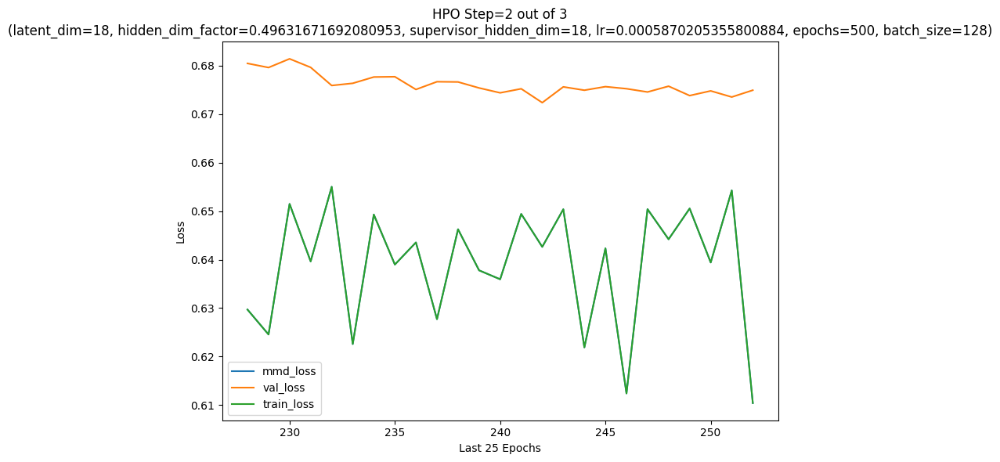
LOCAL_RANK: 0 - CUDA_VISIBLE_DEVICES: [0,1,2]
┏━━━━━━━━━━━━━━━━━━━━━━━━━━━┳━━━━━━━━━━━━━━━━━━━━━━━━━━━┓ ┃ Validate metric ┃ DataLoader 0 ┃ ┡━━━━━━━━━━━━━━━━━━━━━━━━━━━╇━━━━━━━━━━━━━━━━━━━━━━━━━━━┩ │ mmd_loss │ 0.6748475432395935 │ │ val_loss │ 0.6748475432395935 │ └───────────────────────────┴───────────────────────────┘
Tuning Progress: 67%|██████▋ | 2/3 [03:06<01:30, 90.88s/it, Iteration=2, Best Loss=0.595] GPU available: True (cuda), used: True
TPU available: False, using: 0 TPU cores
💡 Tip: For seamless cloud logging and experiment tracking, try installing [litlogger](https://pypi.org/project/litlogger/) to enable LitLogger, which logs metrics and artifacts automatically to the Lightning Experiments platform.
LOCAL_RANK: 0 - CUDA_VISIBLE_DEVICES: [0,1,2]
[INFO] current best val loss: 0.594505786895752; best params: {'latent_dim': 43, 'hidden_dim_factor': 0.2331422339394184, 'supervisor_hidden_dim': 17, 'lr': 0.00037538592368527556, 'epochs': 500, 'batch_size': 32} since 1 hpo iterations
[INFO] training validation split 1
[INFO] hpo config:{'latent_dim': 104, 'hidden_dim_factor': 0.22682330069367787, 'supervisor_hidden_dim': 18, 'lr': 0.005731081904472266, 'epochs': 500, 'batch_size': 64}
┏━━━┳━━━━━━━━━━━━┳━━━━━━━━━━━━━━━┳━━━━━━━━┳━━━━━━━┳━━━━━━━┓ ┃ ┃ Name ┃ Type ┃ Params ┃ Mode ┃ FLOPs ┃ ┡━━━╇━━━━━━━━━━━━╇━━━━━━━━━━━━━━━╇━━━━━━━━╇━━━━━━━╇━━━━━━━┩ │ 0 │ log_vars │ ParameterDict │ 1 │ train │ 0 │ │ 1 │ encoders │ ModuleList │ 116 K │ train │ 0 │ │ 2 │ FC_mean │ Linear │ 21.7 K │ train │ 0 │ │ 3 │ FC_log_var │ Linear │ 21.7 K │ train │ 0 │ │ 4 │ decoders │ ModuleList │ 97.9 K │ train │ 0 │ │ 5 │ MLPs │ ModuleDict │ 0 │ train │ 0 │ └───┴────────────┴───────────────┴────────┴───────┴───────┘
Trainable params: 258 K Non-trainable params: 0 Total params: 258 K Total estimated model params size (MB): 1 Modules in train mode: 32 Modules in eval mode: 0 Total FLOPs: 0
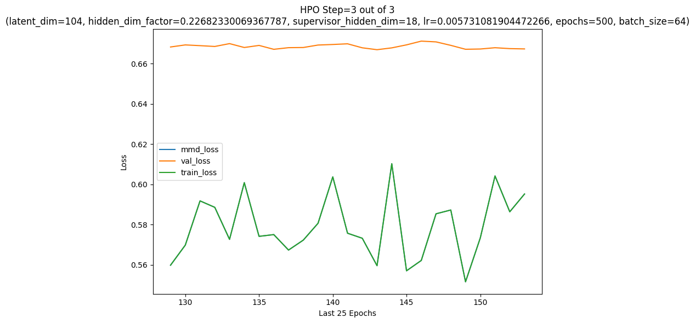
LOCAL_RANK: 0 - CUDA_VISIBLE_DEVICES: [0,1,2]
┏━━━━━━━━━━━━━━━━━━━━━━━━━━━┳━━━━━━━━━━━━━━━━━━━━━━━━━━━┓ ┃ Validate metric ┃ DataLoader 0 ┃ ┡━━━━━━━━━━━━━━━━━━━━━━━━━━━╇━━━━━━━━━━━━━━━━━━━━━━━━━━━┩ │ mmd_loss │ 0.6669526100158691 │ │ val_loss │ 0.6669526100158691 │ └───────────────────────────┴───────────────────────────┘
Tuning Progress: 100%|██████████| 3/3 [03:57<00:00, 79.02s/it, Iteration=3, Best Loss=0.595]
[INFO] current best val loss: 0.594505786895752; best params: {'latent_dim': 43, 'hidden_dim_factor': 0.2331422339394184, 'supervisor_hidden_dim': 17, 'lr': 0.00037538592368527556, 'epochs': 500, 'batch_size': 32} since 2 hpo iterations
소요 시간: 4.0분
저장: ./models/supervised_vae_unsup.pth
E_unsup = model_unsup.transform(test_dataset)
cluster_labels, G, partition = flexynesis.utils.louvain_clustering(E_unsup, k=10)
print("클러스터 수:", len(set(cluster_labels)))
scores = flexynesis.utils.compute_ami_ari(labels, cluster_labels)
print("AMI/ARI vs CLAUDIN_SUBTYPE:", scores)
클러스터 수: 8
AMI/ARI vs CLAUDIN_SUBTYPE: {'ami': 0.24825751180562572, 'ari': 0.16474503069557722}
flexynesis.utils.plot_dim_reduced(E_unsup, cluster_labels, color_type='categorical', method='umap')
{kind=link}
flexynesis.utils.plot_label_concordance_heatmap(labels, cluster_labels, figsize=(12, 6))
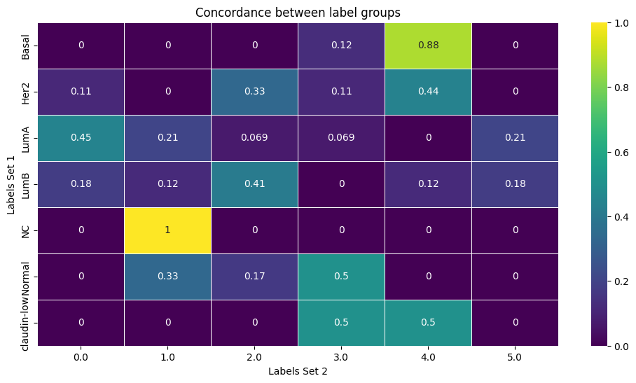
Section 5. MultiTripletNetwork#
# ── MultiTripletNetwork ─────────────────────────────────────
# 1) TripletDataset 로딩 테스트
from flexynesis.data import TripletMultiOmicDataset
from torch.utils.data import DataLoader, random_split
import time
print('TripletMultiOmicDataset 생성 중...')
t0 = time.time()
triplet_ds = TripletMultiOmicDataset(train_dataset, 'CLAUDIN_SUBTYPE')
print(f' 완료 ({time.time()-t0:.1f}s), len={len(triplet_ds)}')
# 클래스별 샘플 수 확인 (1개 클래스=infinite loop)
import numpy as np
labels = train_dataset.ann['CLAUDIN_SUBTYPE'].numpy()
unique, counts = np.unique(labels, return_counts=True)
print('클래스별 샘플 수:', dict(zip(unique.tolist(), counts.tolist())))
assert all(c >= 2 for c in counts), 'ERROR: 1개짜리 클래스 있음 → infinite loop!'
# 2) DataLoader 배치 1개 로딩 테스트
print('\nDataLoader 배치 테스트...')
t0 = time.time()
loader = DataLoader(triplet_ds, batch_size=16, num_workers=0, pin_memory=False)
batch = next(iter(loader))
print(f' 완료 ({time.time()-t0:.1f}s), batch keys: anchor={list(batch[0].keys())}')
print('통과! DataLoader 정상')
TripletMultiOmicDataset 생성 중...
완료 (0.0s), len=199
클래스별 샘플 수: {0.0: 22, 1.0: 23, 2.0: 71, 3.0: 50, 4.0: 2, 5.0: 14, 6.0: 17}
DataLoader 배치 테스트...
완료 (0.0s), batch keys: anchor=['cna', 'gex']
통과! DataLoader 정상
tuner = flexynesis.main.HyperparameterTuning(
dataset=train_dataset,
model_class=flexynesis.models.MultiTripletNetwork,
target_variables=['CLAUDIN_SUBTYPE'],
config_name='MultiTripletNetwork',
n_iter=HPO_ITER,
val_size=0.2, use_cv=False, cv_splits=5,
use_loss_weighting=True, early_stop_patience=10, plot_losses=True,
surv_event_var=None, surv_time_var=None,
batch_variables=None, device_type=None,
)
_t0 = time.time()
model_tri, params_tri = tuner.perform_tuning()
_elapsed = time.time() - _t0
training_log.append({'model': 'MultiTripletNetwork', 'time_sec': _elapsed, 'hpo_iter': HPO_ITER})
print(f"소요 시간: {_elapsed/60:.1f}분")
torch.save(model_tri, './models/MultiTripletNetwork.pth')
print("저장: ./models/MultiTripletNetwork.pth")
Tuning Progress: 0%| | 0/3 [00:00<?, ?it/s]/home/cykim/miniforge3/envs/flexy/lib/python3.12/site-packages/lightning/fabric/plugins/environments/slurm.py:204: PossibleUserWarning: The `srun` command is available on your system but is not used. HINT: If your intention is to run Lightning on SLURM, prepend your python command with `srun` like so: srun python /home/cykim/miniforge3/envs/flexy/lib/python3.12/sit ...
GPU available: True (cuda), used: True
TPU available: False, using: 0 TPU cores
💡 Tip: For seamless cloud logging and experiment tracking, try installing [litlogger](https://pypi.org/project/litlogger/) to enable LitLogger, which logs metrics and artifacts automatically to the Lightning Experiments platform.
LOCAL_RANK: 0 - CUDA_VISIBLE_DEVICES: [0,1,2]
[INFO] training validation split 1
[INFO] hpo config:{'latent_dim': 94, 'hidden_dim_factor': 0.20182662447195174, 'supervisor_hidden_dim': 10, 'lr': 0.005468755467461021, 'epochs': 500, 'batch_size': 32}
┏━━━┳━━━━━━━━━━━━━━┳━━━━━━━━━━━━━━━┳━━━━━━━━┳━━━━━━━┳━━━━━━━┓ ┃ ┃ Name ┃ Type ┃ Params ┃ Mode ┃ FLOPs ┃ ┡━━━╇━━━━━━━━━━━━━━╇━━━━━━━━━━━━━━━╇━━━━━━━━╇━━━━━━━╇━━━━━━━┩ │ 0 │ log_vars │ ParameterDict │ 2 │ train │ 0 │ │ 1 │ encoders │ ModuleList │ 84.7 K │ train │ 0 │ │ 2 │ fusion_block │ Linear │ 17.8 K │ train │ 0 │ │ 3 │ MLPs │ ModuleDict │ 1.0 K │ train │ 0 │ └───┴──────────────┴───────────────┴────────┴───────┴───────┘
Trainable params: 103 K Non-trainable params: 0 Total params: 103 K Total estimated model params size (MB): 0 Modules in train mode: 22 Modules in eval mode: 0 Total FLOPs: 0
/home/cykim/miniforge3/envs/flexy/lib/python3.12/site-packages/lightning/pytorch/utilities/_pytree.py:21: FutureWarning: `isinstance(treespec, LeafSpec)` is deprecated, use `isinstance(treespec, TreeSpec) and treespec.is_leaf()` instead.
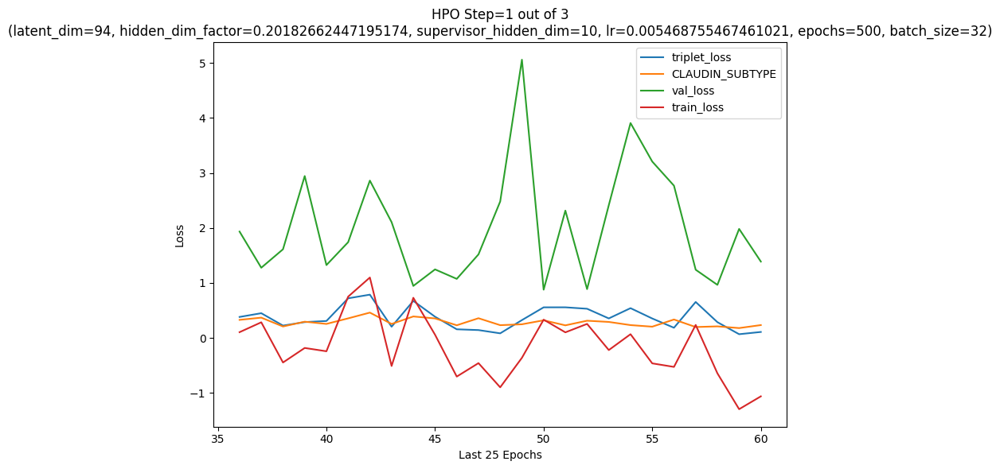
LOCAL_RANK: 0 - CUDA_VISIBLE_DEVICES: [0,1,2]
┏━━━━━━━━━━━━━━━━━━━━━━━━━━━┳━━━━━━━━━━━━━━━━━━━━━━━━━━━┓ ┃ Validate metric ┃ DataLoader 0 ┃ ┡━━━━━━━━━━━━━━━━━━━━━━━━━━━╇━━━━━━━━━━━━━━━━━━━━━━━━━━━┩ │ CLAUDIN_SUBTYPE │ 0.9480093121528625 │ │ triplet_loss │ 0.5201254487037659 │ │ val_loss │ 1.4681347608566284 │ └───────────────────────────┴───────────────────────────┘
Tuning Progress: 33%|███▎ | 1/3 [00:31<01:02, 31.04s/it, Iteration=1, Best Loss=1.47]GPU available: True (cuda), used: True
TPU available: False, using: 0 TPU cores
💡 Tip: For seamless cloud logging and experiment tracking, try installing [litlogger](https://pypi.org/project/litlogger/) to enable LitLogger, which logs metrics and artifacts automatically to the Lightning Experiments platform.
LOCAL_RANK: 0 - CUDA_VISIBLE_DEVICES: [0,1,2]
[INFO] current best val loss: 1.4681347608566284; best params: {'latent_dim': 94, 'hidden_dim_factor': 0.20182662447195174, 'supervisor_hidden_dim': 10, 'lr': 0.005468755467461021, 'epochs': 500, 'batch_size': 32} since 0 hpo iterations
[INFO] training validation split 1
[INFO] hpo config:{'latent_dim': 110, 'hidden_dim_factor': 0.2726693653473701, 'supervisor_hidden_dim': 19, 'lr': 0.00019516099595990124, 'epochs': 500, 'batch_size': 128}
┏━━━┳━━━━━━━━━━━━━━┳━━━━━━━━━━━━━━━┳━━━━━━━━┳━━━━━━━┳━━━━━━━┓ ┃ ┃ Name ┃ Type ┃ Params ┃ Mode ┃ FLOPs ┃ ┡━━━╇━━━━━━━━━━━━━━╇━━━━━━━━━━━━━━━╇━━━━━━━━╇━━━━━━━╇━━━━━━━┩ │ 0 │ log_vars │ ParameterDict │ 2 │ train │ 0 │ │ 1 │ encoders │ ModuleList │ 117 K │ train │ 0 │ │ 2 │ fusion_block │ Linear │ 24.3 K │ train │ 0 │ │ 3 │ MLPs │ ModuleDict │ 2.3 K │ train │ 0 │ └───┴──────────────┴───────────────┴────────┴───────┴───────┘
Trainable params: 144 K Non-trainable params: 0 Total params: 144 K Total estimated model params size (MB): 0 Modules in train mode: 22 Modules in eval mode: 0 Total FLOPs: 0
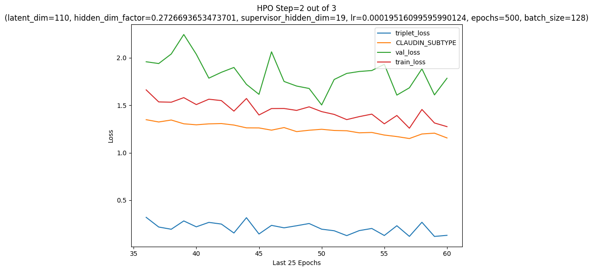
LOCAL_RANK: 0 - CUDA_VISIBLE_DEVICES: [0,1,2]
┏━━━━━━━━━━━━━━━━━━━━━━━━━━━┳━━━━━━━━━━━━━━━━━━━━━━━━━━━┓ ┃ Validate metric ┃ DataLoader 0 ┃ ┡━━━━━━━━━━━━━━━━━━━━━━━━━━━╇━━━━━━━━━━━━━━━━━━━━━━━━━━━┩ │ CLAUDIN_SUBTYPE │ 1.4608136415481567 │ │ triplet_loss │ 0.39578530192375183 │ │ val_loss │ 1.8565988540649414 │ └───────────────────────────┴───────────────────────────┘
Tuning Progress: 67%|██████▋ | 2/3 [00:53<00:25, 25.95s/it, Iteration=2, Best Loss=1.47]GPU available: True (cuda), used: True
TPU available: False, using: 0 TPU cores
💡 Tip: For seamless cloud logging and experiment tracking, try installing [litlogger](https://pypi.org/project/litlogger/) to enable LitLogger, which logs metrics and artifacts automatically to the Lightning Experiments platform.
LOCAL_RANK: 0 - CUDA_VISIBLE_DEVICES: [0,1,2]
[INFO] current best val loss: 1.4681347608566284; best params: {'latent_dim': 94, 'hidden_dim_factor': 0.20182662447195174, 'supervisor_hidden_dim': 10, 'lr': 0.005468755467461021, 'epochs': 500, 'batch_size': 32} since 1 hpo iterations
[INFO] training validation split 1
[INFO] hpo config:{'latent_dim': 40, 'hidden_dim_factor': 0.45902023005710063, 'supervisor_hidden_dim': 18, 'lr': 0.0003846185109296146, 'epochs': 500, 'batch_size': 32}
┏━━━┳━━━━━━━━━━━━━━┳━━━━━━━━━━━━━━━┳━━━━━━━━┳━━━━━━━┳━━━━━━━┓ ┃ ┃ Name ┃ Type ┃ Params ┃ Mode ┃ FLOPs ┃ ┡━━━╇━━━━━━━━━━━━━━╇━━━━━━━━━━━━━━━╇━━━━━━━━╇━━━━━━━╇━━━━━━━┩ │ 0 │ log_vars │ ParameterDict │ 2 │ train │ 0 │ │ 1 │ encoders │ ModuleList │ 172 K │ train │ 0 │ │ 2 │ fusion_block │ Linear │ 3.2 K │ train │ 0 │ │ 3 │ MLPs │ ModuleDict │ 907 │ train │ 0 │ └───┴──────────────┴───────────────┴────────┴───────┴───────┘
Trainable params: 176 K Non-trainable params: 0 Total params: 176 K Total estimated model params size (MB): 0 Modules in train mode: 22 Modules in eval mode: 0 Total FLOPs: 0
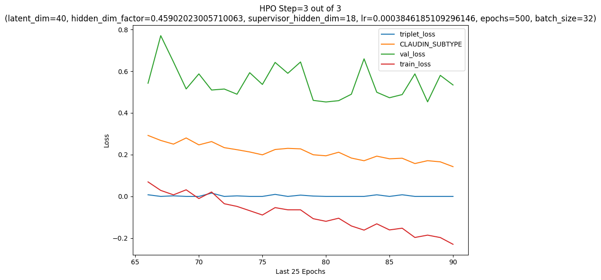
LOCAL_RANK: 0 - CUDA_VISIBLE_DEVICES: [0,1,2]
┏━━━━━━━━━━━━━━━━━━━━━━━━━━━┳━━━━━━━━━━━━━━━━━━━━━━━━━━━┓ ┃ Validate metric ┃ DataLoader 0 ┃ ┡━━━━━━━━━━━━━━━━━━━━━━━━━━━╇━━━━━━━━━━━━━━━━━━━━━━━━━━━┩ │ CLAUDIN_SUBTYPE │ 0.4472220540046692 │ │ triplet_loss │ 0.11326034367084503 │ │ val_loss │ 0.5604824423789978 │ └───────────────────────────┴───────────────────────────┘
Tuning Progress: 100%|██████████| 3/3 [01:42<00:00, 34.26s/it, Iteration=3, Best Loss=0.56]
[INFO] current best val loss: 0.5604824423789978; best params: {'latent_dim': 40, 'hidden_dim_factor': 0.45902023005710063, 'supervisor_hidden_dim': 18, 'lr': 0.0003846185109296146, 'epochs': 500, 'batch_size': 32} since 0 hpo iterations
소요 시간: 1.7분
저장: ./models/MultiTripletNetwork.pth
metrics_tri = flexynesis.utils.evaluate_wrapper(
method='MultiTripletNetwork',
y_pred_dict=model_tri.predict(test_dataset),
dataset=test_dataset,
)
all_metrics.append(metrics_tri)
metrics_tri
| method | var | variable_type | metric | value | |
|---|---|---|---|---|---|
| 0 | MultiTripletNetwork | CLAUDIN_SUBTYPE | categorical | balanced_acc | 0.524973 |
| 1 | MultiTripletNetwork | CLAUDIN_SUBTYPE | categorical | f1_score | 0.666434 |
| 2 | MultiTripletNetwork | CLAUDIN_SUBTYPE | categorical | kappa | 0.587629 |
| 3 | MultiTripletNetwork | CLAUDIN_SUBTYPE | categorical | average_auroc | 0.927117 |
| 4 | MultiTripletNetwork | CLAUDIN_SUBTYPE | categorical | average_aupr | 0.803102 |
E_tri = model_tri.transform(test_dataset)
labels_tri = [test_dataset.label_mappings['CLAUDIN_SUBTYPE'][x]
for x in test_dataset.ann['CLAUDIN_SUBTYPE'].numpy()]
flexynesis.utils.plot_dim_reduced(E_tri, labels_tri, color_type='categorical', method='umap')
{kind=link}
Section 6. GNN#
from flexynesis.data import STRING, MultiOmicDatasetNW
data_importer_gnn = flexynesis.data.DataImporter(
path=PATH,
data_types=['gex'], # GNN은 gex만 사용
concatenate=False,
top_percentile=10, min_features=50,
correlation_threshold=0.9, variance_threshold=0.8,
na_threshold=0.1, log_transform=False,
covariates=None, downsample=0, restrict_to_features=None,
)
train_gnn_raw, test_gnn_raw = data_importer_gnn.import_data()
[INFO] ================= Importing Data =================
[INFO] Validating data folders...
[INFO] ----------------- Reading Data -----------------
[INFO] Importing /data01/storage/flexynesis_workshop/brca_mini/train/clin.csv...
[INFO] Importing /data01/storage/flexynesis_workshop/brca_mini/train/gex.csv...
[INFO] ----------------- Reading Data -----------------
[INFO] Importing /data01/storage/flexynesis_workshop/brca_mini/test/clin.csv...
[INFO] Importing /data01/storage/flexynesis_workshop/brca_mini/test/gex.csv...
[INFO] ----------------- Checking for problems with the input data -----------------
[INFO] Data structure is valid with no errors or warnings.
[INFO] ----------------- Processing Data (train) -----------------
[INFO] ----------------- Cleaning Up Data -----------------
[INFO] working on layer: gex
[INFO] Imputing NA values to median of features, affected # of cells in the matrix 2 # of rows: 2
[INFO] Number of NA values: 0
[INFO] DataFrame gex - Removed 16482 features.
[INFO] DataFrame gex - Removed 0 samples (0.00%).
[INFO] Implementing feature selection using laplacian score for layer: gex with 4121 features and 200 samples
Calculating Laplacian scores: 100%|██████████| 4121/4121 [00:00<00:00, 34879.46it/s]
Filtering redundant features: 100%|██████████| 412/412 [00:00<00:00, 5093.73it/s]
[INFO] ----------------- Processing Data (test) -----------------
[INFO] ----------------- Cleaning Up Data -----------------
[INFO] working on layer: gex
[INFO] Number of NA values: 0
[INFO] DataFrame gex - Removed 16482 features.
[INFO] DataFrame gex - Removed 0 samples (0.00%).
[INFO] ----------------- Harmonizing Data Sets -----------------
[INFO] ----------------- Finished Harmonizing -----------------
[INFO] ----------------- Normalizing Data -----------------
[INFO] ----------------- Normalizing Data -----------------
[INFO] Training Data Stats: {'feature_count in: gex': 369, 'sample_count': 200}
[INFO] Test Data Stats: {'feature_count in: gex': 369, 'sample_count': 80}
[INFO] Merging Feature Logs...
[INFO] Data import successful.
# STRING DB 자동 다운로드 (첫 실행 후 ~/.cache/flexynesis/STRING/ 에 캐시)
print("STRING DB 로딩 중...")
string_obj = STRING(organism=9606, node_name='gene_name')
graph_df = string_obj.graph_df
print(f"PPI interactions: {len(graph_df)}")
train_gnn = MultiOmicDatasetNW(train_gnn_raw, graph_df, modality_order=['gex'])
test_gnn = MultiOmicDatasetNW(test_gnn_raw, graph_df, modality_order=['gex'])
train_gnn.print_stats()
STRING DB 로딩 중...
PPI interactions: 95229
Dataset Statistics:
Number of nodes: 354
Total number of edges: 134
Number of node features per node: 1
Number of singletons (nodes with no edges): 225
Mean number of edges per node (excluding singletons): 2.08
Median number of edges per node (excluding singletons): 2
Max number of edges per node: 11
tuner = flexynesis.main.HyperparameterTuning(
dataset=train_gnn,
model_class=flexynesis.models.GNN,
target_variables=['CLAUDIN_SUBTYPE'],
config_name='GNN',
n_iter=HPO_ITER,
val_size=0.2, use_cv=False, cv_splits=5,
use_loss_weighting=True, early_stop_patience=10, plot_losses=True,
surv_event_var=None, surv_time_var=None,
batch_variables=None, device_type=None,
gnn_conv_type='GC', # 'GC'(기본), 'GCN', 'GAT', 'SAGE'
)
_t0 = time.time()
model_gnn, params_gnn = tuner.perform_tuning()
_elapsed = time.time() - _t0
training_log.append({'model': 'GNN', 'time_sec': _elapsed, 'hpo_iter': HPO_ITER})
print(f"소요 시간: {_elapsed/60:.1f}분")
torch.save(model_gnn, './models/GNN.pth')
print("저장: ./models/GNN.pth")
Tuning Progress: 0%| | 0/3 [00:00<?, ?it/s]/home/cykim/miniforge3/envs/flexy/lib/python3.12/site-packages/lightning/fabric/plugins/environments/slurm.py:204: PossibleUserWarning: The `srun` command is available on your system but is not used. HINT: If your intention is to run Lightning on SLURM, prepend your python command with `srun` like so: srun python /home/cykim/miniforge3/envs/flexy/lib/python3.12/sit ...
GPU available: True (cuda), used: True
TPU available: False, using: 0 TPU cores
💡 Tip: For seamless cloud logging and experiment tracking, try installing [litlogger](https://pypi.org/project/litlogger/) to enable LitLogger, which logs metrics and artifacts automatically to the Lightning Experiments platform.
LOCAL_RANK: 0 - CUDA_VISIBLE_DEVICES: [0,1,2]
[INFO] training validation split 1
[INFO] hpo config:{'latent_dim': 17, 'node_embedding_dim': 26, 'num_convs': 3, 'lr': 0.0005586111526131259, 'supervisor_hidden_dim': 9, 'epochs': 500, 'activation': 'relu', 'batch_size': 128}
┏━━━┳━━━━━━━━━━┳━━━━━━━━━━━━━━━┳━━━━━━━━┳━━━━━━━┳━━━━━━━┓ ┃ ┃ Name ┃ Type ┃ Params ┃ Mode ┃ FLOPs ┃ ┡━━━╇━━━━━━━━━━╇━━━━━━━━━━━━━━━╇━━━━━━━━╇━━━━━━━╇━━━━━━━┩ │ 0 │ log_vars │ ParameterDict │ 1 │ train │ 0 │ │ 1 │ encoders │ ModuleList │ 159 K │ train │ 0 │ │ 2 │ MLPs │ ModuleDict │ 250 │ train │ 0 │ └───┴──────────┴───────────────┴────────┴───────┴───────┘
Trainable params: 159 K Non-trainable params: 0 Total params: 159 K Total estimated model params size (MB): 0 Modules in train mode: 30 Modules in eval mode: 0 Total FLOPs: 0
/home/cykim/miniforge3/envs/flexy/lib/python3.12/site-packages/lightning/pytorch/utilities/_pytree.py:21: FutureWarning: `isinstance(treespec, LeafSpec)` is deprecated, use `isinstance(treespec, TreeSpec) and treespec.is_leaf()` instead.
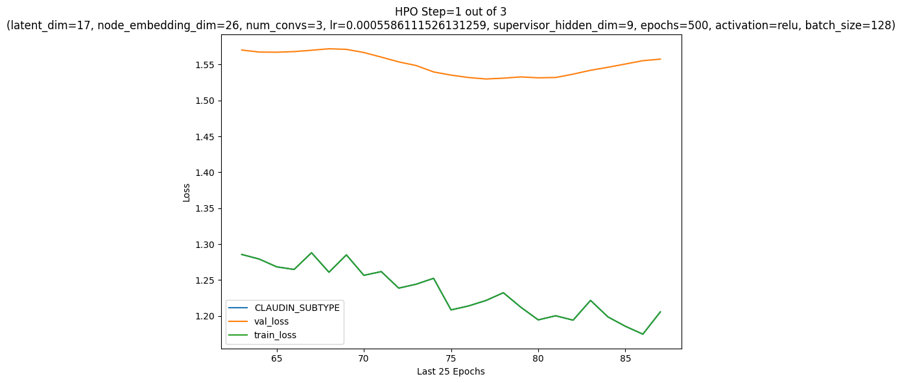
LOCAL_RANK: 0 - CUDA_VISIBLE_DEVICES: [0,1,2]
┏━━━━━━━━━━━━━━━━━━━━━━━━━━━┳━━━━━━━━━━━━━━━━━━━━━━━━━━━┓ ┃ Validate metric ┃ DataLoader 0 ┃ ┡━━━━━━━━━━━━━━━━━━━━━━━━━━━╇━━━━━━━━━━━━━━━━━━━━━━━━━━━┩ │ CLAUDIN_SUBTYPE │ 1.557491660118103 │ │ val_loss │ 1.557491660118103 │ └───────────────────────────┴───────────────────────────┘
Tuning Progress: 33%|███▎ | 1/3 [00:19<00:39, 19.70s/it, Iteration=1, Best Loss=1.56]GPU available: True (cuda), used: True
TPU available: False, using: 0 TPU cores
💡 Tip: For seamless cloud logging and experiment tracking, try installing [litlogger](https://pypi.org/project/litlogger/) to enable LitLogger, which logs metrics and artifacts automatically to the Lightning Experiments platform.
LOCAL_RANK: 0 - CUDA_VISIBLE_DEVICES: [0,1,2]
[INFO] current best val loss: 1.557491660118103; best params: {'latent_dim': 17, 'node_embedding_dim': 26, 'num_convs': 3, 'lr': 0.0005586111526131259, 'supervisor_hidden_dim': 9, 'epochs': 500, 'activation': 'relu', 'batch_size': 128} since 0 hpo iterations
[INFO] training validation split 1
[INFO] hpo config:{'latent_dim': 77, 'node_embedding_dim': 30, 'num_convs': 2, 'lr': 0.0028278203840949715, 'supervisor_hidden_dim': 23, 'epochs': 500, 'activation': 'relu', 'batch_size': 64}
┏━━━┳━━━━━━━━━━┳━━━━━━━━━━━━━━━┳━━━━━━━━┳━━━━━━━┳━━━━━━━┓ ┃ ┃ Name ┃ Type ┃ Params ┃ Mode ┃ FLOPs ┃ ┡━━━╇━━━━━━━━━━╇━━━━━━━━━━━━━━━╇━━━━━━━━╇━━━━━━━╇━━━━━━━┩ │ 0 │ log_vars │ ParameterDict │ 1 │ train │ 0 │ │ 1 │ encoders │ ModuleList │ 819 K │ train │ 0 │ │ 2 │ MLPs │ ModuleDict │ 2.0 K │ train │ 0 │ └───┴──────────┴───────────────┴────────┴───────┴───────┘
Trainable params: 821 K Non-trainable params: 0 Total params: 821 K Total estimated model params size (MB): 3 Modules in train mode: 25 Modules in eval mode: 0 Total FLOPs: 0
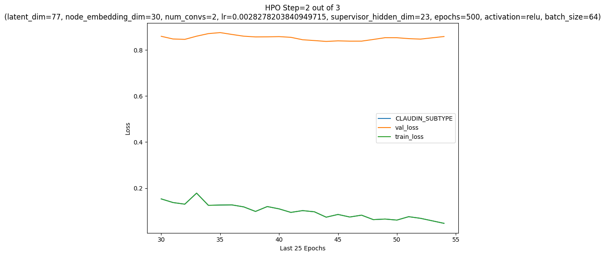
LOCAL_RANK: 0 - CUDA_VISIBLE_DEVICES: [0,1,2]
┏━━━━━━━━━━━━━━━━━━━━━━━━━━━┳━━━━━━━━━━━━━━━━━━━━━━━━━━━┓ ┃ Validate metric ┃ DataLoader 0 ┃ ┡━━━━━━━━━━━━━━━━━━━━━━━━━━━╇━━━━━━━━━━━━━━━━━━━━━━━━━━━┩ │ CLAUDIN_SUBTYPE │ 0.8580913543701172 │ │ val_loss │ 0.8580913543701172 │ └───────────────────────────┴───────────────────────────┘
Tuning Progress: 67%|██████▋ | 2/3 [00:37<00:18, 18.41s/it, Iteration=2, Best Loss=0.858]GPU available: True (cuda), used: True
TPU available: False, using: 0 TPU cores
💡 Tip: For seamless cloud logging and experiment tracking, try installing [litlogger](https://pypi.org/project/litlogger/) to enable LitLogger, which logs metrics and artifacts automatically to the Lightning Experiments platform.
LOCAL_RANK: 0 - CUDA_VISIBLE_DEVICES: [0,1,2]
[INFO] current best val loss: 0.8580913543701172; best params: {'latent_dim': 77, 'node_embedding_dim': 30, 'num_convs': 2, 'lr': 0.0028278203840949715, 'supervisor_hidden_dim': 23, 'epochs': 500, 'activation': 'relu', 'batch_size': 64} since 0 hpo iterations
[INFO] training validation split 1
[INFO] hpo config:{'latent_dim': 72, 'node_embedding_dim': 25, 'num_convs': 2, 'lr': 0.006027178462153539, 'supervisor_hidden_dim': 10, 'epochs': 500, 'activation': 'relu', 'batch_size': 128}
┏━━━┳━━━━━━━━━━┳━━━━━━━━━━━━━━━┳━━━━━━━━┳━━━━━━━┳━━━━━━━┓ ┃ ┃ Name ┃ Type ┃ Params ┃ Mode ┃ FLOPs ┃ ┡━━━╇━━━━━━━━━━╇━━━━━━━━━━━━━━━╇━━━━━━━━╇━━━━━━━╇━━━━━━━┩ │ 0 │ log_vars │ ParameterDict │ 1 │ train │ 0 │ │ 1 │ encoders │ ModuleList │ 638 K │ train │ 0 │ │ 2 │ MLPs │ ModuleDict │ 827 │ train │ 0 │ └───┴──────────┴───────────────┴────────┴───────┴───────┘
Trainable params: 639 K Non-trainable params: 0 Total params: 639 K Total estimated model params size (MB): 2 Modules in train mode: 25 Modules in eval mode: 0 Total FLOPs: 0
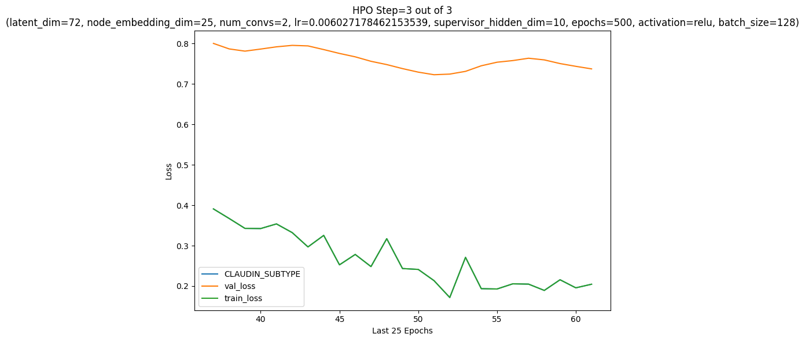
LOCAL_RANK: 0 - CUDA_VISIBLE_DEVICES: [0,1,2]
┏━━━━━━━━━━━━━━━━━━━━━━━━━━━┳━━━━━━━━━━━━━━━━━━━━━━━━━━━┓ ┃ Validate metric ┃ DataLoader 0 ┃ ┡━━━━━━━━━━━━━━━━━━━━━━━━━━━╇━━━━━━━━━━━━━━━━━━━━━━━━━━━┩ │ CLAUDIN_SUBTYPE │ 0.7374961972236633 │ │ val_loss │ 0.7374961972236633 │ └───────────────────────────┴───────────────────────────┘
Tuning Progress: 100%|██████████| 3/3 [00:56<00:00, 18.90s/it, Iteration=3, Best Loss=0.737]
[INFO] current best val loss: 0.7374961972236633; best params: {'latent_dim': 72, 'node_embedding_dim': 25, 'num_convs': 2, 'lr': 0.006027178462153539, 'supervisor_hidden_dim': 10, 'epochs': 500, 'activation': 'relu', 'batch_size': 128} since 0 hpo iterations
소요 시간: 0.9분
저장: ./models/GNN.pth
metrics_gnn = flexynesis.utils.evaluate_wrapper(
method='GNN',
y_pred_dict=model_gnn.predict(test_gnn),
dataset=test_gnn,
)
all_metrics.append(metrics_gnn)
metrics_gnn
| method | var | variable_type | metric | value | |
|---|---|---|---|---|---|
| 0 | GNN | CLAUDIN_SUBTYPE | categorical | balanced_acc | 0.554871 |
| 1 | GNN | CLAUDIN_SUBTYPE | categorical | f1_score | 0.685037 |
| 2 | GNN | CLAUDIN_SUBTYPE | categorical | kappa | 0.597342 |
| 3 | GNN | CLAUDIN_SUBTYPE | categorical | average_auroc | 0.928055 |
| 4 | GNN | CLAUDIN_SUBTYPE | categorical | average_aupr | 0.772502 |
E_gnn = model_gnn.transform(test_gnn)
labels_gnn = [test_gnn.label_mappings['CLAUDIN_SUBTYPE'][x]
for x in test_gnn.ann['CLAUDIN_SUBTYPE'].numpy()]
flexynesis.utils.plot_dim_reduced(E_gnn, labels_gnn, color_type='categorical', method='umap')
{kind=link}
Section 7. CrossModalPred#
tuner = flexynesis.main.HyperparameterTuning(
dataset=train_dataset,
model_class=flexynesis.models.CrossModalPred,
target_variables=['CLAUDIN_SUBTYPE'],
config_name='CrossModalPred',
n_iter=HPO_ITER,
val_size=0.2, use_cv=False, cv_splits=5,
use_loss_weighting=True, early_stop_patience=10, plot_losses=True,
surv_event_var=None, surv_time_var=None,
batch_variables=None, device_type=None,
input_layers=['gex'], # 입력 omics
output_layers=['cna'], # 재구성 대상 omics
)
_t0 = time.time()
model_cross, params_cross = tuner.perform_tuning()
_elapsed = time.time() - _t0
training_log.append({'model': 'CrossModalPred', 'time_sec': _elapsed, 'hpo_iter': HPO_ITER})
print(f"소요 시간: {_elapsed/60:.1f}분")
torch.save(model_cross, './models/CrossModalPred.pth')
print("저장: ./models/CrossModalPred.pth")
Tuning Progress: 0%| | 0/3 [00:00<?, ?it/s]/home/cykim/miniforge3/envs/flexy/lib/python3.12/site-packages/lightning/fabric/plugins/environments/slurm.py:204: PossibleUserWarning: The `srun` command is available on your system but is not used. HINT: If your intention is to run Lightning on SLURM, prepend your python command with `srun` like so: srun python /home/cykim/miniforge3/envs/flexy/lib/python3.12/sit ...
GPU available: True (cuda), used: True
TPU available: False, using: 0 TPU cores
💡 Tip: For seamless cloud logging and experiment tracking, try installing [litlogger](https://pypi.org/project/litlogger/) to enable LitLogger, which logs metrics and artifacts automatically to the Lightning Experiments platform.
LOCAL_RANK: 0 - CUDA_VISIBLE_DEVICES: [0,1,2]
[INFO] training validation split 1
[INFO] hpo config:{'latent_dim': 112, 'hidden_dim_factor': 0.2495906858413884, 'supervisor_hidden_dim': 29, 'lr': 0.0009583629450092886, 'epochs': 500, 'batch_size': 128}
┏━━━┳━━━━━━━━━━━━┳━━━━━━━━━━━━━━━┳━━━━━━━━┳━━━━━━━┳━━━━━━━┓ ┃ ┃ Name ┃ Type ┃ Params ┃ Mode ┃ FLOPs ┃ ┡━━━╇━━━━━━━━━━━━╇━━━━━━━━━━━━━━━╇━━━━━━━━╇━━━━━━━╇━━━━━━━┩ │ 0 │ log_vars │ ParameterDict │ 2 │ train │ 0 │ │ 1 │ encoders │ ModuleList │ 55.2 K │ train │ 0 │ │ 2 │ FC_mean │ Linear │ 12.7 K │ train │ 0 │ │ 3 │ FC_log_var │ Linear │ 12.7 K │ train │ 0 │ │ 4 │ decoders │ ModuleList │ 63.8 K │ train │ 0 │ │ 5 │ MLPs │ ModuleDict │ 3.5 K │ train │ 0 │ └───┴────────────┴───────────────┴────────┴───────┴───────┘
Trainable params: 147 K Non-trainable params: 0 Total params: 147 K Total estimated model params size (MB): 0 Modules in train mode: 25 Modules in eval mode: 0 Total FLOPs: 0
/home/cykim/miniforge3/envs/flexy/lib/python3.12/site-packages/lightning/pytorch/utilities/_pytree.py:21: FutureWarning: `isinstance(treespec, LeafSpec)` is deprecated, use `isinstance(treespec, TreeSpec) and treespec.is_leaf()` instead.
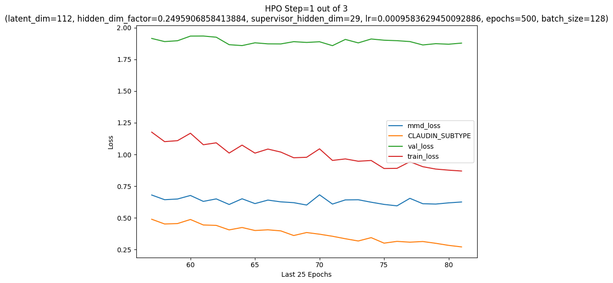
LOCAL_RANK: 0 - CUDA_VISIBLE_DEVICES: [0,1,2]
┏━━━━━━━━━━━━━━━━━━━━━━━━━━━┳━━━━━━━━━━━━━━━━━━━━━━━━━━━┓ ┃ Validate metric ┃ DataLoader 0 ┃ ┡━━━━━━━━━━━━━━━━━━━━━━━━━━━╇━━━━━━━━━━━━━━━━━━━━━━━━━━━┩ │ CLAUDIN_SUBTYPE │ 0.8558371067047119 │ │ mmd_loss │ 1.0313940048217773 │ │ val_loss │ 1.8872311115264893 │ └───────────────────────────┴───────────────────────────┘
Tuning Progress: 33%|███▎ | 1/3 [00:24<00:48, 24.23s/it, Iteration=1, Best Loss=1.89]GPU available: True (cuda), used: True
TPU available: False, using: 0 TPU cores
💡 Tip: For seamless cloud logging and experiment tracking, try installing [litlogger](https://pypi.org/project/litlogger/) to enable LitLogger, which logs metrics and artifacts automatically to the Lightning Experiments platform.
LOCAL_RANK: 0 - CUDA_VISIBLE_DEVICES: [0,1,2]
[INFO] current best val loss: 1.8872311115264893; best params: {'latent_dim': 112, 'hidden_dim_factor': 0.2495906858413884, 'supervisor_hidden_dim': 29, 'lr': 0.0009583629450092886, 'epochs': 500, 'batch_size': 128} since 0 hpo iterations
[INFO] training validation split 1
[INFO] hpo config:{'latent_dim': 84, 'hidden_dim_factor': 0.37298420213891537, 'supervisor_hidden_dim': 21, 'lr': 0.0005525085868653468, 'epochs': 500, 'batch_size': 32}
┏━━━┳━━━━━━━━━━━━┳━━━━━━━━━━━━━━━┳━━━━━━━━┳━━━━━━━┳━━━━━━━┓ ┃ ┃ Name ┃ Type ┃ Params ┃ Mode ┃ FLOPs ┃ ┡━━━╇━━━━━━━━━━━━╇━━━━━━━━━━━━━━━╇━━━━━━━━╇━━━━━━━╇━━━━━━━┩ │ 0 │ log_vars │ ParameterDict │ 2 │ train │ 0 │ │ 1 │ encoders │ ModuleList │ 75.0 K │ train │ 0 │ │ 2 │ FC_mean │ Linear │ 7.1 K │ train │ 0 │ │ 3 │ FC_log_var │ Linear │ 7.1 K │ train │ 0 │ │ 4 │ decoders │ ModuleList │ 90.8 K │ train │ 0 │ │ 5 │ MLPs │ ModuleDict │ 2.0 K │ train │ 0 │ └───┴────────────┴───────────────┴────────┴───────┴───────┘
Trainable params: 182 K Non-trainable params: 0 Total params: 182 K Total estimated model params size (MB): 0 Modules in train mode: 25 Modules in eval mode: 0 Total FLOPs: 0
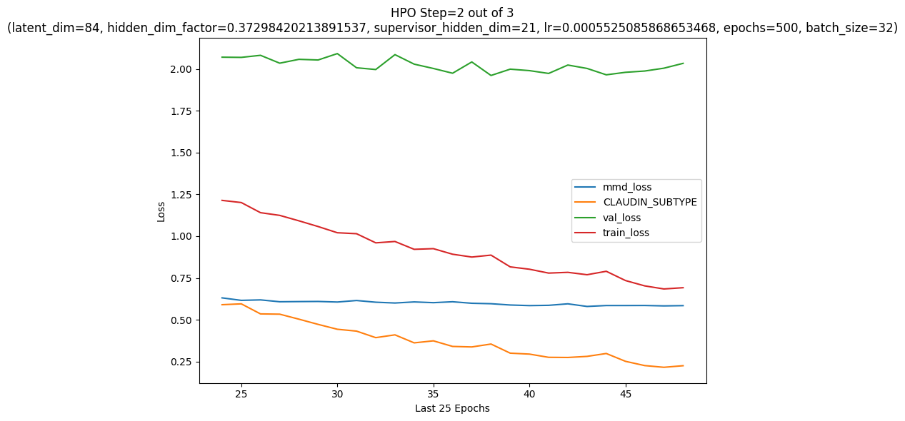
LOCAL_RANK: 0 - CUDA_VISIBLE_DEVICES: [0,1,2]
┏━━━━━━━━━━━━━━━━━━━━━━━━━━━┳━━━━━━━━━━━━━━━━━━━━━━━━━━━┓ ┃ Validate metric ┃ DataLoader 0 ┃ ┡━━━━━━━━━━━━━━━━━━━━━━━━━━━╇━━━━━━━━━━━━━━━━━━━━━━━━━━━┩ │ CLAUDIN_SUBTYPE │ 0.9851507544517517 │ │ mmd_loss │ 0.9967672824859619 │ │ val_loss │ 1.9819179773330688 │ └───────────────────────────┴───────────────────────────┘
Tuning Progress: 67%|██████▋ | 2/3 [00:48<00:24, 24.16s/it, Iteration=2, Best Loss=1.89]GPU available: True (cuda), used: True
TPU available: False, using: 0 TPU cores
💡 Tip: For seamless cloud logging and experiment tracking, try installing [litlogger](https://pypi.org/project/litlogger/) to enable LitLogger, which logs metrics and artifacts automatically to the Lightning Experiments platform.
LOCAL_RANK: 0 - CUDA_VISIBLE_DEVICES: [0,1,2]
[INFO] current best val loss: 1.8872311115264893; best params: {'latent_dim': 112, 'hidden_dim_factor': 0.2495906858413884, 'supervisor_hidden_dim': 29, 'lr': 0.0009583629450092886, 'epochs': 500, 'batch_size': 128} since 1 hpo iterations
[INFO] training validation split 1
[INFO] hpo config:{'latent_dim': 121, 'hidden_dim_factor': 0.4681955615140883, 'supervisor_hidden_dim': 16, 'lr': 0.002876918372105493, 'epochs': 500, 'batch_size': 64}
┏━━━┳━━━━━━━━━━━━┳━━━━━━━━━━━━━━━┳━━━━━━━━┳━━━━━━━┳━━━━━━━┓ ┃ ┃ Name ┃ Type ┃ Params ┃ Mode ┃ FLOPs ┃ ┡━━━╇━━━━━━━━━━━━╇━━━━━━━━━━━━━━━╇━━━━━━━━╇━━━━━━━╇━━━━━━━┩ │ 0 │ log_vars │ ParameterDict │ 2 │ train │ 0 │ │ 1 │ encoders │ ModuleList │ 106 K │ train │ 0 │ │ 2 │ FC_mean │ Linear │ 14.8 K │ train │ 0 │ │ 3 │ FC_log_var │ Linear │ 14.8 K │ train │ 0 │ │ 4 │ decoders │ ModuleList │ 121 K │ train │ 0 │ │ 5 │ MLPs │ ModuleDict │ 2.1 K │ train │ 0 │ └───┴────────────┴───────────────┴────────┴───────┴───────┘
Trainable params: 260 K Non-trainable params: 0 Total params: 260 K Total estimated model params size (MB): 1 Modules in train mode: 25 Modules in eval mode: 0 Total FLOPs: 0
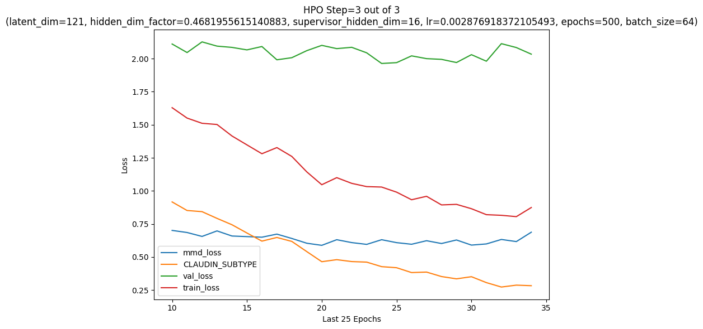
LOCAL_RANK: 0 - CUDA_VISIBLE_DEVICES: [0,1,2]
┏━━━━━━━━━━━━━━━━━━━━━━━━━━━┳━━━━━━━━━━━━━━━━━━━━━━━━━━━┓ ┃ Validate metric ┃ DataLoader 0 ┃ ┡━━━━━━━━━━━━━━━━━━━━━━━━━━━╇━━━━━━━━━━━━━━━━━━━━━━━━━━━┩ │ CLAUDIN_SUBTYPE │ 1.1695882081985474 │ │ mmd_loss │ 0.8548206686973572 │ │ val_loss │ 2.0244088172912598 │ └───────────────────────────┴───────────────────────────┘
Tuning Progress: 100%|██████████| 3/3 [01:00<00:00, 20.18s/it, Iteration=3, Best Loss=1.89]
[INFO] current best val loss: 1.8872311115264893; best params: {'latent_dim': 112, 'hidden_dim_factor': 0.2495906858413884, 'supervisor_hidden_dim': 29, 'lr': 0.0009583629450092886, 'epochs': 500, 'batch_size': 128} since 2 hpo iterations
소요 시간: 1.0분
저장: ./models/CrossModalPred.pth
metrics_cross = flexynesis.utils.evaluate_wrapper(
method='CrossModalPred',
y_pred_dict=model_cross.predict(test_dataset),
dataset=test_dataset,
)
all_metrics.append(metrics_cross)
metrics_cross
| method | var | variable_type | metric | value | |
|---|---|---|---|---|---|
| 0 | CrossModalPred | CLAUDIN_SUBTYPE | categorical | balanced_acc | 0.522989 |
| 1 | CrossModalPred | CLAUDIN_SUBTYPE | categorical | f1_score | 0.666793 |
| 2 | CrossModalPred | CLAUDIN_SUBTYPE | categorical | kappa | 0.591920 |
| 3 | CrossModalPred | CLAUDIN_SUBTYPE | categorical | average_auroc | 0.923303 |
| 4 | CrossModalPred | CLAUDIN_SUBTYPE | categorical | average_aupr | 0.801825 |
E_cross = model_cross.transform(test_dataset)
labels_cross = [test_dataset.label_mappings['CLAUDIN_SUBTYPE'][x]
for x in test_dataset.ann['CLAUDIN_SUBTYPE'].numpy()]
flexynesis.utils.plot_dim_reduced(E_cross, labels_cross, color_type='categorical', method='umap')
{kind=link}
Section 8. 모델 성능 비교#
log_df = pd.DataFrame(training_log)
log_df['time_min'] = (log_df['time_sec'] / 60).round(1)
log_df['time_sec'] = log_df['time_sec'].round(0).astype(int)
log_df = log_df[['model', 'hpo_iter', 'time_min', 'time_sec']]
log_df.columns = ['Model', 'HPO iter', 'Time (min)', 'Time (sec)']
log_df
| Model | HPO iter | Time (min) | Time (sec) | |
|---|---|---|---|---|
| 0 | DirectPred (clf) | 3 | 0.7 | 43 |
| 1 | DirectPred (surv) | 3 | 0.3 | 19 |
| 2 | supervised_vae (clf) | 3 | 1.3 | 81 |
| 3 | supervised_vae (unsup) | 3 | 4.0 | 237 |
| 4 | MultiTripletNetwork | 3 | 1.7 | 103 |
| 5 | GNN | 3 | 0.9 | 57 |
| 6 | CrossModalPred | 3 | 1.0 | 61 |
clf_metrics = [m for m in all_metrics if 'balanced_acc' in m['metric'].values]
comparison = pd.concat(clf_metrics, ignore_index=True)
pivot = comparison.pivot_table(index='method', columns='metric', values='value')
pivot = pivot[['balanced_acc', 'f1_score', 'kappa', 'average_auroc', 'average_aupr']]
pivot.sort_values('average_auroc', ascending=False)
| metric | balanced_acc | f1_score | kappa | average_auroc | average_aupr |
|---|---|---|---|---|---|
| method | |||||
| DirectPred | 0.612479 | 0.711945 | 0.637224 | 0.931027 | 0.790874 |
| GNN | 0.554871 | 0.685037 | 0.597342 | 0.928055 | 0.772502 |
| MultiTripletNetwork | 0.524973 | 0.666434 | 0.587629 | 0.927117 | 0.803102 |
| CrossModalPred | 0.522989 | 0.666793 | 0.591920 | 0.923303 | 0.801825 |
| supervised_vae | 0.596401 | 0.716399 | 0.642058 | 0.910939 | 0.763634 |
| DirectPred_survival | 0.468750 | 0.432000 | -0.073620 | 0.389974 | 0.553138 |
import matplotlib.pyplot as plt
fig, ax = plt.subplots(figsize=(10, 4))
pivot[['balanced_acc', 'f1_score', 'average_auroc']].plot(kind='bar', ax=ax, rot=0)
ax.set_title('Model Comparison — CLAUDIN_SUBTYPE Classification')
ax.set_ylim(0, 1)
ax.axhline(0.5, color='gray', linestyle='--', alpha=0.5, label='random')
ax.legend(loc='lower right')
plt.tight_layout()
plt.show()
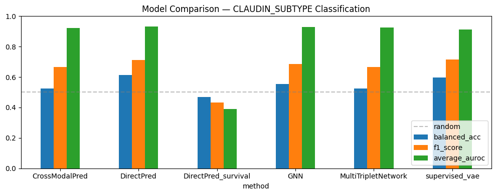
model_dp.compute_feature_importance(train_dataset, 'CLAUDIN_SUBTYPE')
flexynesis.utils.get_important_features(
model_dp,
var='CLAUDIN_SUBTYPE',
top=15,
)
/home/cykim/flexynesis/flexynesis/utils.py:953: FutureWarning: DataFrameGroupBy.apply operated on the grouping columns. This behavior is deprecated, and in a future version of pandas the grouping columns will be excluded from the operation. Either pass `include_groups=False` to exclude the groupings or explicitly select the grouping columns after groupby to silence this warning.
| target_variable | target_class | target_class_label | layer | name | importance | |
|---|---|---|---|---|---|---|
| 0 | CLAUDIN_SUBTYPE | 0 | Basal | gex | MSN | 0.113611 |
| 1 | CLAUDIN_SUBTYPE | 0 | Basal | gex | ARMT1 | 0.105748 |
| 2 | CLAUDIN_SUBTYPE | 0 | Basal | gex | STARD10 | 0.098365 |
| 3 | CLAUDIN_SUBTYPE | 0 | Basal | gex | PRNP | 0.096869 |
| 4 | CLAUDIN_SUBTYPE | 0 | Basal | gex | AFF3 | 0.090131 |
| ... | ... | ... | ... | ... | ... | ... |
| 100 | CLAUDIN_SUBTYPE | 6 | claudin-low | gex | CDCA3 | 0.088326 |
| 101 | CLAUDIN_SUBTYPE | 6 | claudin-low | gex | KCTD12 | 0.086381 |
| 102 | CLAUDIN_SUBTYPE | 6 | claudin-low | gex | IGFBP4 | 0.085565 |
| 103 | CLAUDIN_SUBTYPE | 6 | claudin-low | gex | CAV1 | 0.084195 |
| 104 | CLAUDIN_SUBTYPE | 6 | claudin-low | gex | SEMA3F | 0.084071 |
105 rows × 6 columns